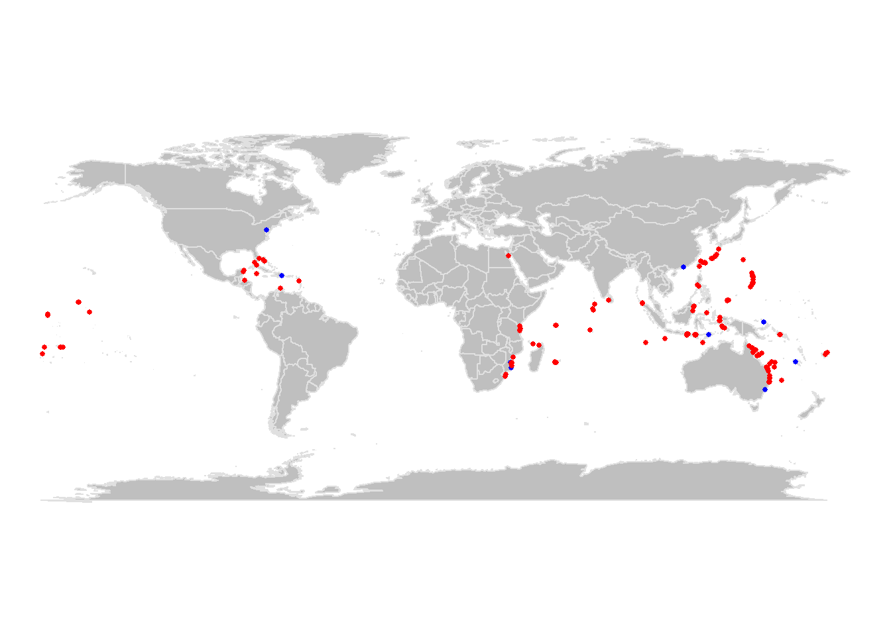

Atividade 3
3.1 Acesso a bancos de dados abertos
O acesso pode ser feito de diferentes formas, seja diretamente no website do repositório, utilizando-se pacotes específicos que acessam os repositórios via R ou Python, ou através de API (Application Programming Interface). Nesta última opção, o repositório é acessado por outro aplicativo ou serviço web para automatização de tarefas, seja em servidor local ou remoto, mas requer conhecimento de programação em Java e outras linguagens e não será tratado aqui.
Nesta atividade, temos como objetivo acessar um repositório de dados de ocorrência de espécies, inspecionar os dados, avaliar sua qualidade e fazer um mapa com as ocorrências.
Para iniciar, vamos escolher um repositório e uma espécie de interesse. Vamos iniciar com uma única espécie para facilitar as demais etapas.
O GBIF (Global Biodiversity Information Facility) é o maior repositório de ocorrências da biodiversidade da atualidade, então será nossa opção de repositório. No entanto, o OBIS (Ocean Biodiversity Information System) é um repositório dedicado às espécies marinhas e espelhado no GBIF. Assim, espera-se que algumas ocorrências sejam duplicadas nos dois repositórios.
3.1.1 Exemplo: Finding Dori
A espécie-alvo será o peixe marinho Paracanthurus hepatus, também conhecido como Blue Tang e, mais recentemente como Dori!.
Nosso primeiro exemplor será com as ocorrencias do
GBIF e, para tal, vamos utilizar o pacote
rgbif.
3.1.2 GBIF
Vamos fazer uso do pacote tidyverse para manipular dos
dados, então vamos carregar este pacote e o rgbif.
É importante explorar as funções do pacote e pode-se fazer isto
usando o comando ?rgbif e, para ler sobre uma função em
particular basta colocar ? em frente ao nome da função. Se
o pacote não estiver carregado ou instalada é preciso usar
??.
A função occ_data faz uma busca simplificada das
ocorrências no repositório do GBIF por meio do nome
científico, número de identificação, país e outros. Neste caso, vamos
procurar diretamente pelo nome da espécie-alvo. Outros atributos podem
ser adicionados à função para refinar a busca, leia o material de ajuda
da função para ter uma ideia. Vamos aproveitar alguns destes atributos e
selecionar apenas ocorrências que possuem coordenadas e sem problemas
geoespaciais.
# checar funcoes
?occ_data
# baixar ocorrencias
dori_gbif <- occ_data(scientificName = "Paracanthurus hepatus",
hasCoordinate = TRUE,
hasGeospatialIssue=FALSE)
# dimensoes
dim(dori_gbif)## NULLdim(dori_gbif$data)## [1] 500 154# checar campos
dori_gbif$data %>% names## [1] "key"
## [2] "scientificName"
## [3] "decimalLatitude"
## [4] "decimalLongitude"
## [5] "issues"
## [6] "datasetKey"
## [7] "publishingOrgKey"
## [8] "installationKey"
## [9] "publishingCountry"
## [10] "protocol"
## [11] "lastCrawled"
## [12] "lastParsed"
## [13] "crawlId"
## [14] "hostingOrganizationKey"
## [15] "basisOfRecord"
## [16] "occurrenceStatus"
## [17] "lifeStage"
## [18] "taxonKey"
## [19] "kingdomKey"
## [20] "phylumKey"
## [21] "classKey"
## [22] "orderKey"
## [23] "familyKey"
## [24] "genusKey"
## [25] "speciesKey"
## [26] "acceptedTaxonKey"
## [27] "acceptedScientificName"
## [28] "kingdom"
## [29] "phylum"
## [30] "order"
## [31] "family"
## [32] "genus"
## [33] "species"
## [34] "genericName"
## [35] "specificEpithet"
## [36] "taxonRank"
## [37] "taxonomicStatus"
## [38] "iucnRedListCategory"
## [39] "dateIdentified"
## [40] "coordinateUncertaintyInMeters"
## [41] "stateProvince"
## [42] "year"
## [43] "month"
## [44] "day"
## [45] "eventDate"
## [46] "modified"
## [47] "lastInterpreted"
## [48] "references"
## [49] "license"
## [50] "isInCluster"
## [51] "inCluster"
## [52] "geodeticDatum"
## [53] "class"
## [54] "countryCode"
## [55] "country"
## [56] "rightsHolder"
## [57] "identifier"
## [58] "http://unknown.org/nick"
## [59] "verbatimEventDate"
## [60] "datasetName"
## [61] "gbifID"
## [62] "collectionCode"
## [63] "verbatimLocality"
## [64] "occurrenceID"
## [65] "taxonID"
## [66] "recordedBy"
## [67] "catalogNumber"
## [68] "institutionCode"
## [69] "eventTime"
## [70] "identifiedBy"
## [71] "http://unknown.org/captive"
## [72] "identificationID"
## [73] "occurrenceRemarks"
## [74] "networkKeys"
## [75] "coordinatePrecision"
## [76] "institutionKey"
## [77] "eventID"
## [78] "acceptedNameUsage"
## [79] "dynamicProperties"
## [80] "http://unknown.org/taxonRankID"
## [81] "vernacularName"
## [82] "otherCatalogNumbers"
## [83] "locationRemarks"
## [84] "taxonConceptID"
## [85] "http://unknown.org/species"
## [86] "samplingProtocol"
## [87] "identificationRemarks"
## [88] "nameAccordingTo"
## [89] "higherGeography"
## [90] "locality"
## [91] "language"
## [92] "type"
## [93] "higherClassification"
## [94] "individualCount"
## [95] "depth"
## [96] "depthAccuracy"
## [97] "waterBody"
## [98] "sampleSizeUnit"
## [99] "sampleSizeValue"
## [100] "habitat"
## [101] "institutionID"
## [102] "islandGroup"
## [103] "dataGeneralizations"
## [104] "georeferencedBy"
## [105] "maximumDistanceAboveSurfaceInMeters"
## [106] "island"
## [107] "georeferenceProtocol"
## [108] "verbatimDepth"
## [109] "ownerInstitutionCode"
## [110] "datasetID"
## [111] "elevation"
## [112] "elevationAccuracy"
## [113] "rights"
## [114] "georeferenceSources"
## [115] "projectId"
## [116] "programmeAcronym"
## [117] "continent"
## [118] "organismQuantity"
## [119] "organismQuantityType"
## [120] "endDayOfYear"
## [121] "county"
## [122] "locationAccordingTo"
## [123] "startDayOfYear"
## [124] "associatedReferences"
## [125] "identificationVerificationStatus"
## [126] "footprintWKT"
## [127] "originalNameUsage"
## [128] "recordNumber"
## [129] "collectionKey"
## [130] "fieldNumber"
## [131] "preparations"
## [132] "collectionID"
## [133] "http://unknown.org/language"
## [134] "http://unknown.org/rights"
## [135] "http://unknown.org/rightsHolder"
## [136] "materialSampleID"
## [137] "disposition"
## [138] "municipality"
## [139] "eventRemarks"
## [140] "locationID"
## [141] "bibliographicCitation"
## [142] "identificationReferences"
## [143] "georeferenceVerificationStatus"
## [144] "verbatimSRS"
## [145] "verbatimCoordinateSystem"
## [146] "nomenclaturalCode"
## [147] "name"
## [148] "parentEventID"
## [149] "samplingEffort"
## [150] "previousIdentifications"
## [151] "acceptedNameUsageID"
## [152] "associatedSequences"
## [153] "parentNameUsageID"
## [154] "organismID"Acima, vemos que o conjunto de dados tem ocorrências (uma por linha)
e variáveis. As variáveis podem ser utilizadas para filtrar as
ocorrências de acordo com o objetivo, além de fornecerem diversos dados
a respeito das ocorrências, incluindo dados dos amostradores e
detentores dos direitos. Vale notar que o conjunto de dados retornado
pelo GBIF não é um data frame simples, mas
sim um list que contém um conjunto de
data frames. Para acessar estes data frames é
necessário usar o operador $.
3.2 Problemas reportados
Um dos campos mais úteis dos dados é a coluna issues,
pois ela indica problema já identificados pelo validador automático do
repositório. Os problemas (issues) possuem um código que pode
ser conferido pela função gbif_issues. Ao usar a função não
é preciso indicar nenhum atributo, pois ela retornará um dataframe com
as abreviações usadas e a descrição dos problemas catalogados no
GBIF.
## code issue
## 1 bri BASIS_OF_RECORD_INVALID
## 2 ccm CONTINENT_COUNTRY_MISMATCH
## 3 cdc CONTINENT_DERIVED_FROM_COORDINATES
## 4 conti CONTINENT_INVALID
## 5 cdiv COORDINATE_INVALID
## 6 cdout COORDINATE_OUT_OF_RANGE
## 7 cdrep COORDINATE_REPROJECTED
## 8 cdrepf COORDINATE_REPROJECTION_FAILED
## 9 cdreps COORDINATE_REPROJECTION_SUSPICIOUS
## 10 cdround COORDINATE_ROUNDED
## 11 cucdmis COUNTRY_COORDINATE_MISMATCH
## 12 cudc COUNTRY_DERIVED_FROM_COORDINATES
## 13 cuiv COUNTRY_INVALID
## 14 cum COUNTRY_MISMATCH
## 15 depmms DEPTH_MIN_MAX_SWAPPED
## 16 depnn DEPTH_NON_NUMERIC
## 17 depnmet DEPTH_NOT_METRIC
## 18 depunl DEPTH_UNLIKELY
## 19 elmms ELEVATION_MIN_MAX_SWAPPED
## 20 elnn ELEVATION_NON_NUMERIC
## 21 elnmet ELEVATION_NOT_METRIC
## 22 elunl ELEVATION_UNLIKELY
## 23 gass84 GEODETIC_DATUM_ASSUMED_WGS84
## 24 gdativ GEODETIC_DATUM_INVALID
## 25 iddativ IDENTIFIED_DATE_INVALID
## 26 iddatunl IDENTIFIED_DATE_UNLIKELY
## 27 mdativ MODIFIED_DATE_INVALID
## 28 mdatunl MODIFIED_DATE_UNLIKELY
## 29 muldativ MULTIMEDIA_DATE_INVALID
## 30 muluriiv MULTIMEDIA_URI_INVALID
## 31 preneglat PRESUMED_NEGATED_LATITUDE
## 32 preneglon PRESUMED_NEGATED_LONGITUDE
## 33 preswcd PRESUMED_SWAPPED_COORDINATE
## 34 rdativ RECORDED_DATE_INVALID
## 35 rdatm RECORDED_DATE_MISMATCH
## 36 rdatunl RECORDED_DATE_UNLIKELY
## 37 refuriiv REFERENCES_URI_INVALID
## 38 txmatfuz TAXON_MATCH_FUZZY
## 39 txmathi TAXON_MATCH_HIGHERRANK
## 40 txmatnon TAXON_MATCH_NONE
## 41 typstativ TYPE_STATUS_INVALID
## 42 zerocd ZERO_COORDINATE
## 43 cdpi COORDINATE_PRECISION_INVALID
## 44 cdumi COORDINATE_UNCERTAINTY_METERS_INVALID
## 45 indci INDIVIDUAL_COUNT_INVALID
## 46 interr INTERPRETATION_ERROR
## 47 iccos INDIVIDUAL_COUNT_CONFLICTS_WITH_OCCURRENCE_STATUS
## 48 osiic OCCURRENCE_STATUS_INFERRED_FROM_INDIVIDUAL_COUNT
## 49 osu OCCURRENCE_STATUS_UNPARSABLE
## 50 geodi GEOREFERENCED_DATE_INVALID
## 51 geodu GEOREFERENCED_DATE_UNLIKELY
## 52 ambcol AMBIGUOUS_COLLECTION
## 53 ambinst AMBIGUOUS_INSTITUTION
## 54 colmafu COLLECTION_MATCH_FUZZY
## 55 colmano COLLECTION_MATCH_NONE
## 56 incomis INSTITUTION_COLLECTION_MISMATCH
## 57 inmafu INSTITUTION_MATCH_FUZZY
## 58 inmano INSTITUTION_MATCH_NONE
## 59 osifbor OCCURRENCE_STATUS_INFERRED_FROM_BASIS_OF_RECORD
## 60 diffown DIFFERENT_OWNER_INSTITUTION
## 61 taxmatagg TAXON_MATCH_AGGREGATE
## 62 fpsrsinv FOOTPRINT_SRS_INVALID
## 63 fpwktinv FOOTPRINT_WKT_INVALID
## 64 anm ACCEPTED_NAME_MISSING
## 65 annu ACCEPTED_NAME_NOT_UNIQUE
## 66 anuidi ACCEPTED_NAME_USAGE_ID_INVALID
## 67 aitidinv ALT_IDENTIFIER_INVALID
## 68 bbmn BACKBONE_MATCH_NONE
## 69 basauthm BASIONYM_AUTHOR_MISMATCH
## 70 bibrinv BIB_REFERENCE_INVALID
## 71 chsun CHAINED_SYNOYM
## 72 clasna CLASSIFICATION_NOT_APPLIED
## 73 clasroi CLASSIFICATION_RANK_ORDER_INVALID
## 74 conbascomb CONFLICTING_BASIONYM_COMBINATION
## 75 desinv DESCRIPTION_INVALID
## 76 disinv DISTRIBUTION_INVALID
## 77 hom HOMONYM
## 78 minv MULTIMEDIA_INVALID
## 79 npm NAME_PARENT_MISMATCH
## 80 ns NO_SPECIES
## 81 nsinv NOMENCLATURAL_STATUS_INVALID
## 82 onder ORIGINAL_NAME_DERIVED
## 83 onnu ORIGINAL_NAME_NOT_UNIQUE
## 84 onuidinv ORIGINAL_NAME_USAGE_ID_INVALID
## 85 ov ORTHOGRAPHIC_VARIANT
## 86 pc PARENT_CYCLE
## 87 pnnu PARENT_NAME_NOT_UNIQUE
## 88 pnuidinv PARENT_NAME_USAGE_ID_INVALID
## 89 pp PARTIALLY_PARSABLE
## 90 pbg PUBLISHED_BEFORE_GENUS
## 91 rankinv RANK_INVALID
## 92 relmiss RELATIONSHIP_MISSING
## 93 scina SCIENTIFIC_NAME_ASSEMBLED
## 94 spprinv SPECIES_PROFILE_INVALID
## 95 taxstinv TAXONOMIC_STATUS_INVALID
## 96 taxstmis TAXONOMIC_STATUS_MISMATCH
## 97 unpars UNPARSABLE
## 98 vernnameinv VERNACULAR_NAME_INVALID
## 99 backmatagg BACKBONE_MATCH_AGGREGATE
## description
## 1 The given basis of record is impossible to interpret or seriously different from the recommended vocabulary.
## 2 The interpreted continent and country do not match up.
## 3 The interpreted continent is based on the coordinates, not the verbatim string information.
## 4 Uninterpretable continent values found.
## 5 Coordinate value given in some form but GBIF is unable to interpret it.
## 6 Coordinate has invalid lat/lon values out of their decimal max range.
## 7 The original coordinate was successfully reprojected from a different geodetic datum to WGS84.
## 8 The given decimal latitude and longitude could not be reprojected to WGS84 based on the provided datum.
## 9 Indicates successful coordinate reprojection according to provided datum, but which results in a datum shift larger than 0.1 decimal degrees.
## 10 Original coordinate modified by rounding to 5 decimals.
## 11 The interpreted occurrence coordinates fall outside of the indicated country.
## 12 The interpreted country is based on the coordinates, not the verbatim string information.
## 13 Uninterpretable country values found.
## 14 Interpreted country for dwc:country and dwc:countryCode contradict each other.
## 15 Set if supplied min>max
## 16 Set if depth is a non numeric value
## 17 Set if supplied depth is not given in the metric system, for example using feet instead of meters
## 18 Set if depth is larger than 11.000m or negative.
## 19 Set if supplied min > max elevation
## 20 Set if elevation is a non numeric value
## 21 Set if supplied elevation is not given in the metric system, for example using feet instead of meters
## 22 Set if elevation is above the troposphere (17km) or below 11km (Mariana Trench).
## 23 Indicating that the interpreted coordinates assume they are based on WGS84 datum as the datum was either not indicated or interpretable.
## 24 The geodetic datum given could not be interpreted.
## 25 The date given for dwc:dateIdentified is invalid and cant be interpreted at all.
## 26 The date given for dwc:dateIdentified is in the future or before Linnean times (1700).
## 27 A (partial) invalid date is given for dc:modified, such as a non existing date, invalid zero month, etc.
## 28 The date given for dc:modified is in the future or predates unix time (1970).
## 29 An invalid date is given for dc:created of a multimedia object.
## 30 An invalid uri is given for a multimedia object.
## 31 Latitude appears to be negated, e.g. 32.3 instead of -32.3
## 32 Longitude appears to be negated, e.g. 32.3 instead of -32.3
## 33 Latitude and longitude appear to be swapped.
## 34 A (partial) invalid date is given, such as a non existing date, invalid zero month, etc.
## 35 The recording date specified as the eventDate string and the individual year, month, day are contradicting.
## 36 The recording date is highly unlikely, falling either into the future or represents a very old date before 1600 that predates modern taxonomy.
## 37 An invalid uri is given for dc:references.
## 38 Matching to the taxonomic backbone can only be done using a fuzzy, non exact match.
## 39 Matching to the taxonomic backbone can only be done on a higher rank and not the scientific name.
## 40 Matching to the taxonomic backbone cannot be done cause there was no match at all or several matches with too little information to keep them apart (homonyms).
## 41 The given type status is impossible to interpret or seriously different from the recommended vocabulary.
## 42 Coordinate is the exact 0/0 coordinate, often indicating a bad null coordinate.
## 43 Indicates an invalid or very unlikely coordinatePrecision
## 44 Indicates an invalid or very unlikely dwc:uncertaintyInMeters.
## 45 Individual count value not parsable into an integer.
## 46 An error occurred during interpretation, leaving the record interpretation incomplete.
## 47 Example: individual count value > 0, but occurrence status is absent and etc.
## 48 Occurrence status was inferred from the individual count value
## 49 Occurrence status value can't be assigned to OccurrenceStatus
## 50 The date given for dwc:georeferencedDate is invalid and can't be interpreted at all.
## 51 The date given for dwc:georeferencedDate is in the future or before Linnean times (1700).
## 52 The given collection matches with more than 1 GrSciColl collection.
## 53 The given institution matches with more than 1 GrSciColl institution.
## 54 The given collection was fuzzily matched to a GrSciColl collection.
## 55 The given collection couldn't be matched with any GrSciColl collection.
## 56 The collection matched doesn't belong to the institution matched.
## 57 The given institution was fuzzily matched to a GrSciColl institution.
## 58 The given institution couldn't be matched with any GrSciColl institution.
## 59 Occurrence status was inferred from basis of records
## 60 The given owner institution is different than the given institution. Therefore we assume it doesn't belong to the institution and we don't link it to the occurrence.
## 61 Matching to the taxonomic backbone can only be done on a species level, but the occurrence was in fact considered a broader species aggregate/complex.
## 62 The Footprint Spatial Reference System given could not be interpreted
## 63 The Footprint Well-Known-Text given could not be interpreted
## 64 Synonym lacking an accepted name.
## 65 Synonym has a verbatim accepted name which is not unique and refers to several records.
## 66 The value for dwc:acceptedNameUsageID could not be resolved.
## 67 At least one alternative identifier extension record attached to this name usage is invalid.
## 68 Name usage could not be matched to the GBIF backbone.
## 69 The authorship of the original name does not match the authorship in brackets of the actual name.
## 70 At least one bibliographic reference extension record attached to this name usage is invalid.
## 71 If a synonym points to another synonym as its accepted taxon the chain is resolved.
## 72 The denormalized classification could not be applied to the name usage.
## 73 The given ranks of the names in the classification hierarchy do not follow the hierarchy of ranks.
## 74 There have been more than one accepted name in a homotypical basionym group of names.
## 75 At least one description extension record attached to this name usage is invalid.
## 76 At least one distribution extension record attached to this name usage is invalid.
## 77 A not synonymized homonym exists for this name in some other backbone source which have been ignored at build time.
## 78 At least one multimedia extension record attached to this name usage is invalid.
## 79 The (accepted) bi/trinomial name does not match the parent name and should be recombined into the parent genus/species.
## 80 The group (currently only genera are tested) are lacking any accepted species GBIF backbone specific issue.
## 81 dwc:nomenclaturalStatus could not be interpreted
## 82 Record has a original name (basionym) relationship which was derived from name & authorship comparison, but did not exist explicitly in the data.
## 83 Record has a verbatim original name (basionym) which is not unique and refers to several records.
## 84 The value for dwc:originalNameUsageID could not be resolved.
## 85 A potential orthographic variant exists in the backbone.
## 86 The child parent classification resulted into a cycle that needed to be resolved/cut.
## 87 Record has a verbatim parent name which is not unique and refers to several records.
## 88 The value for dwc:parentNameUsageID could not be resolved.
## 89 The beginning of the scientific name string was parsed, but there is additional information in the string that was not understood.
## 90 A bi/trinomial name published earlier than the parent genus was published.
## 91 dwc:taxonRank could not be interpreted
## 92 There were problems representing all name usage relationships, i.e.
## 93 The scientific name was assembled from the individual name parts and not given as a whole string.
## 94 At least one species profile extension record attached to this name usage is invalid.
## 95 dwc:taxonomicStatus could not be interpreted
## 96 no description
## 97 The scientific name string could not be parsed at all, but appears to be a parsable name type, i.e.
## 98 At least one vernacular name extension record attached to this name usage is invalid.
## 99 Name usage could only be matched to a GBIF backbone species, but was in fact a broader species aggregate/complex.
## type
## 1 occurrence
## 2 occurrence
## 3 occurrence
## 4 occurrence
## 5 occurrence
## 6 occurrence
## 7 occurrence
## 8 occurrence
## 9 occurrence
## 10 occurrence
## 11 occurrence
## 12 occurrence
## 13 occurrence
## 14 occurrence
## 15 occurrence
## 16 occurrence
## 17 occurrence
## 18 occurrence
## 19 occurrence
## 20 occurrence
## 21 occurrence
## 22 occurrence
## 23 occurrence
## 24 occurrence
## 25 occurrence
## 26 occurrence
## 27 occurrence
## 28 occurrence
## 29 occurrence
## 30 occurrence
## 31 occurrence
## 32 occurrence
## 33 occurrence
## 34 occurrence
## 35 occurrence
## 36 occurrence
## 37 occurrence
## 38 occurrence
## 39 occurrence
## 40 occurrence
## 41 occurrence
## 42 occurrence
## 43 occurrence
## 44 occurrence
## 45 occurrence
## 46 occurrence
## 47 occurrence
## 48 occurrence
## 49 occurrence
## 50 occurrence
## 51 occurrence
## 52 occurrence
## 53 occurrence
## 54 occurrence
## 55 occurrence
## 56 occurrence
## 57 occurrence
## 58 occurrence
## 59 occurrence
## 60 occurrence
## 61 occurrence
## 62 occurrence
## 63 occurrence
## 64 name
## 65 name
## 66 name
## 67 name
## 68 name
## 69 name
## 70 name
## 71 name
## 72 name
## 73 name
## 74 name
## 75 name
## 76 name
## 77 name
## 78 name
## 79 name
## 80 name
## 81 name
## 82 name
## 83 name
## 84 name
## 85 name
## 86 name
## 87 name
## 88 name
## 89 name
## 90 name
## 91 name
## 92 name
## 93 name
## 94 name
## 95 name
## 96 name
## 97 name
## 98 name
## 99 namePara checar os issues indicados na base baixada é
necessário um pequeno tratamento, uma vez que algumas ocorrências
possuem múltiplos problemas. Assim, utilizamos a função
strsplit para individualizar os issues e poder
conferí-los.
## code issue
## 1 conti CONTINENT_INVALID
## 2 cdreps COORDINATE_REPROJECTION_SUSPICIOUS
## 3 cdround COORDINATE_ROUNDED
## 4 cudc COUNTRY_DERIVED_FROM_COORDINATES
## 5 cum COUNTRY_MISMATCH
## 6 gass84 GEODETIC_DATUM_ASSUMED_WGS84
## 7 gdativ GEODETIC_DATUM_INVALID
## 8 refuriiv REFERENCES_URI_INVALID
## 9 osiic OCCURRENCE_STATUS_INFERRED_FROM_INDIVIDUAL_COUNT
## 10 colmafu COLLECTION_MATCH_FUZZY
## 11 incomis INSTITUTION_COLLECTION_MISMATCH
## 12 inmafu INSTITUTION_MATCH_FUZZY
## 13 fpwktinv FOOTPRINT_WKT_INVALID
## description
## 1 Uninterpretable continent values found.
## 2 Indicates successful coordinate reprojection according to provided datum, but which results in a datum shift larger than 0.1 decimal degrees.
## 3 Original coordinate modified by rounding to 5 decimals.
## 4 The interpreted country is based on the coordinates, not the verbatim string information.
## 5 Interpreted country for dwc:country and dwc:countryCode contradict each other.
## 6 Indicating that the interpreted coordinates assume they are based on WGS84 datum as the datum was either not indicated or interpretable.
## 7 The geodetic datum given could not be interpreted.
## 8 An invalid uri is given for dc:references.
## 9 Occurrence status was inferred from the individual count value
## 10 The given collection was fuzzily matched to a GrSciColl collection.
## 11 The collection matched doesn't belong to the institution matched.
## 12 The given institution was fuzzily matched to a GrSciColl institution.
## 13 The Footprint Well-Known-Text given could not be interpreted
## type
## 1 occurrence
## 2 occurrence
## 3 occurrence
## 4 occurrence
## 5 occurrence
## 6 occurrence
## 7 occurrence
## 8 occurrence
## 9 occurrence
## 10 occurrence
## 11 occurrence
## 12 occurrence
## 13 occurrenceA maioria dos problemas reportados é relacionado com discrepancias entre informações indicadas pelos autores e as levantadas pelo algoritmo de checagem, mas nenhum parece invalidar as ocorrências, por enquanto.
Prosseguimos selecionando algumas variáveis que serão úteis para a validação dos dados e futuras análises, como coordenadas, profundidade, nome da base de dados etc.
dori_gbif1 <- dori_gbif$data %>%
dplyr::select(scientificName, acceptedScientificName, decimalLatitude, decimalLongitude,
issues, waterBody, basisOfRecord, occurrenceStatus, rightsHolder,
datasetName, recordedBy, depth, locality, habitat) Note que temos 500 ocorrências, no entanto, vamos ver quantas são
únicas aplicando a função distinct do pacote
dplyr.
dori_gbif1 <- dori_gbif1 %>%
distinct() No fim, observamos que ficamos com 378 ocorrências agora, e isso acontece por causa de diferenças em colunas que, neste caso, não serão usadas para o objetivo desta prática.
Para identificar todos os valores únicos presented nos dados, vamos
aplicar a função unique a cada coluna com um loop
na função lapply.
# checar niveis dos fatores
lapply(dori_gbif1, unique)## $scientificName
## [1] "Paracanthurus hepatus (Linnaeus, 1766)"
## [2] "BOLD:AAC3227"
## [3] "BOLD:AAT9935"
##
## $acceptedScientificName
## [1] "Paracanthurus hepatus (Linnaeus, 1766)"
## [2] "BOLD:AAC3227"
## [3] "BOLD:AAT9935"
##
## $decimalLatitude
## [1] -33.800169 -30.202839 -27.400000 -28.611278 -4.656524 -17.636875
## [7] 25.015492 2.728201 -6.353158 22.319095 28.169633 -14.663600
## [13] 4.595825 -18.287067 -13.647350 -8.349668 22.680278 -28.196141
## [19] 26.189035 -2.244373 -8.727807 -2.204717 -30.204320 -24.113638
## [25] 15.022028 -5.816751 -5.840112 27.388889 -28.611482 -24.116345
## [31] -17.076469 -17.077753 -10.423094 -29.927833 -10.393100 -8.481814
## [37] -8.612647 1.615687 13.522638 13.518570 4.116129 0.186880
## [43] 0.798243 -28.611023 6.384268 -16.428461 27.328333 -4.714799
## [49] -16.767523 4.109330 -21.151370 -23.817600 -29.929429 -4.279653
## [55] -24.110377 -0.584608 -17.575953 14.865178 14.838945 13.282353
## [61] 18.169705 18.090721 18.144987 14.108882 14.169204 15.274841
## [67] 15.052066 14.927633 15.010917 15.192456 14.924998 -27.535837
## [73] 18.093946 18.050178 18.085108 15.134210 15.111052 15.113834
## [79] 16.718400 25.752000 -2.757490 13.686601 -5.820478 4.121438
## [85] -21.170370 -21.205960 -21.205150 -21.035070 -21.233100 -21.073840
## [91] -21.239710 -2.260250 -2.249608 -14.273857 -17.076470 -16.783458
## [97] -21.349500 -21.484390 -16.657679 -25.288066 30.487778 -8.400000
## [103] -21.319020 24.306446 -4.321165 -17.068420 -8.689442 -14.235900
## [109] -21.366690 -21.371320 -21.370350 26.291180 1.872135 0.187242
## [115] 0.190310 0.191557 0.822466 0.820899 -17.116486 -17.070283
## [121] -17.062497 -14.151863 -14.224068 -14.278573 -14.279030 -14.241373
## [127] -14.285210 -14.273254 16.135100 -21.660010 -21.991250 6.382461
## [133] -27.532000 24.436835 -5.611260 -27.525900 -15.484300 -8.537167
## [139] -8.475600 -4.530000 -5.304400 24.472500 -12.872840 23.212100
## [145] -4.714922 -21.015540 -21.015000 6.986900 7.134422 -27.520850
## [151] -27.523100 -17.408093 -21.058230 14.843660 18.149654 14.201462
## [157] 15.269845 15.261225 15.275189 15.268836 15.256714 15.282955
## [163] 15.275694 15.116363 14.934944 15.276654 15.281291 15.003307
## [169] -4.292379 -8.636633 17.591924 26.237900 24.455000 -23.322967
## [175] -23.890883 -8.349183 -8.277300 13.230371 -8.505400 -24.112880
## [181] 13.522800 -14.529133 -21.160690 -29.447500 -14.681537 -27.529900
## [187] -27.538681 -6.456933 -29.930400 -30.202300 5.550000 18.437700
## [193] -23.247900 -21.851700 -21.897300 -21.248000 -20.976700 -17.827500
## [199] -16.931600 -8.583764 -12.217000 27.510000 19.292300 -21.371260
## [205] -21.372000 -21.365210 16.383300 -17.092612 -17.100688 0.194956
## [211] 0.195480 0.190741 -8.556720 -26.822600 -6.634620 -8.277000
## [217] 25.821500 -14.523517 3.352720 39.284700 -27.533300 -27.524900
## [223] -12.085451 -24.111530 19.675859 18.049572 15.110629 16.710502
## [229] 15.105225 15.091283 14.952465 15.255971 14.931544 20.748400
## [235] 14.864917 14.847157 15.077733 15.069572 15.086594 15.055609
## [241] -29.923100 -30.017600 16.324900 -23.796683 -23.848667 -23.745917
## [247] -21.150000 -21.146900 -18.846000 0.206550 0.190290 0.193110
## [253] -14.652800 -14.652770 -28.611000 -27.413500 -27.413510 25.034300
## [259] -10.429600 -10.428100 2.285408 -4.313293 12.601900 20.307600
## [265] 5.864600 -29.930440 -30.206662 15.273530 15.254217 15.268808
## [271] 15.004243 5.883700 5.875800 18.811222 17.607530 -29.933100
## [277] -29.912700 -30.201900 -29.912740 -29.933083 -8.277800 16.320100
## [283] 0.197000 -22.843333 -22.835000 -13.500000 -22.840000 -30.201700
## [289] -30.207000 -30.204300 -29.923140 -30.205030 -30.201670 -30.207010
## [295] -20.843860 -14.651927 7.366017 15.176020 17.586930 -21.060000
## [301] -21.059999 -10.446286 -21.349080 0.190850 14.246000 14.250000
## [307] -27.490000 7.117000 7.120000
##
## $decimalLongitude
## [1] 151.30166 153.26505 153.56667 153.62837 39.36794 148.44080
## [7] 122.00093 72.97009 39.30729 114.16936 129.29053 145.66355
## [13] 118.86434 147.69919 144.10688 116.06586 121.49028 153.57911
## [19] 127.40389 130.55572 115.54442 130.56772 153.26482 152.70748
## [25] 145.57996 39.38253 39.46530 128.52111 153.62856 152.70794
## [31] 179.11049 179.10984 105.66871 153.38925 105.66045 119.52971
## [37] 158.20064 124.73795 120.97290 120.99116 118.63001 -176.46176
## [43] -176.62003 153.62923 -162.46472 145.99662 128.55778 39.37970
## [49] 179.94055 118.62500 35.08851 35.40329 153.39147 55.72781
## [55] 152.71023 130.63281 178.98593 145.56811 145.53007 144.76383
## [61] 145.79179 145.76129 145.75369 145.16840 145.28545 145.79259
## [67] 145.65608 145.63037 145.58553 145.70396 145.64574 32.67988
## [73] 145.74479 145.70588 145.72653 145.67886 145.70275 145.69897
## [79] 145.77638 141.47400 150.71890 120.91363 39.38162 118.63332
## [85] 55.27931 55.27962 55.27898 55.21433 55.29266 55.22368
## [91] 55.30145 130.64465 130.62375 -169.49334 179.11049 179.92354
## [97] 55.46860 35.45493 146.02884 152.90847 130.15250 119.35000
## [103] 35.50786 124.09048 55.86569 179.10468 119.57251 -178.17400
## [109] 55.65609 55.68264 55.73661 126.78845 -157.42781 -176.46102
## [115] -176.45731 -176.48886 -176.62678 -176.62671 179.10813 179.10590
## [121] 179.09860 -169.61060 -169.51954 -170.54882 -170.54739 -170.67885
## [127] -170.54548 -170.50510 -61.77100 35.42359 35.38154 -162.42674
## [133] 32.68670 123.79669 132.74726 32.68540 147.10760 119.60195
## [139] 119.55653 131.65190 131.99690 122.96361 45.27593 -81.18580
## [145] 39.37488 55.23410 55.23405 134.21884 134.22094 32.68732
## [151] 32.68600 -179.05644 55.21915 145.56591 145.81155 145.26090
## [157] 145.78511 145.82889 145.82971 145.83191 145.81463 145.80272
## [163] 145.79354 145.69629 145.65172 145.82731 145.80069 145.67423
## [169] 55.86796 119.71143 145.81372 -80.00000 -81.85830 151.98242
## [175] 152.43017 116.05110 115.59450 144.64386 157.99209 152.71402
## [181] 120.99300 145.58833 55.83662 159.05390 145.43811 32.68800
## [187] 32.67879 71.25228 153.38980 153.26580 73.45000 -69.69920
## [193] 155.56720 153.52120 153.53760 155.76360 154.34530 148.50350
## [199] 149.99040 119.60596 123.00390 34.18600 -81.10510 55.54613
## [205] 55.54547 55.53040 -86.40000 179.09921 179.12516 -176.48664
## [211] -176.48669 -176.48881 125.50000 32.88350 39.23600 115.59400
## [217] -77.93170 145.58198 72.43150 -76.60830 32.68090 32.68440
## [223] 96.87765 152.71830 145.40914 145.70552 145.70190 145.76719
## [229] 145.72023 145.75022 145.61942 145.72341 145.63004 -86.88900
## [235] 145.58005 145.56905 145.65842 145.65610 145.65793 145.59721
## [241] 153.38810 153.26920 -86.57990 152.30293 152.38175 152.28250
## [247] 55.83000 55.82176 36.32800 -176.47949 -176.45685 -176.45694
## [253] 145.45050 153.62830 153.52520 153.62831 153.52519 -77.39630
## [259] 105.66810 105.66580 118.24362 55.86585 -70.05770 -87.01840
## [265] 95.26880 153.38984 153.26605 145.79122 145.75177 145.83218
## [271] 145.58672 95.25900 95.25970 145.67677 145.81530 153.39260
## [277] 153.38340 153.26760 153.38342 153.39256 115.59460 -86.64170
## [283] -176.48620 35.55833 35.55100 47.95000 35.55000 47.95000
## [289] 153.26640 153.26530 153.26480 153.38809 153.26635 153.26527
## [295] 165.41826 145.45101 134.61270 145.78762 145.81808 55.22000
## [301] 55.22000 105.57552 55.46472 -176.48893 120.47900 120.47900
## [307] 120.48000 32.70000 79.80800 79.80800 79.81000
##
## $issues
## [1] "cdround" "cudc"
## [3] "cdround,cudc" "incomis,inmafu"
## [5] "" "cdround,gass84,incomis,inmafu"
## [7] "cudc,gass84,gdativ,refuriiv" "cdreps"
## [9] "osiic" "cdround,gass84"
## [11] "gass84,incomis,inmafu" "cum,gass84"
## [13] "cum,gass84,fpwktinv" "gass84"
## [15] "cdround,cudc,gass84,gdativ,refuriiv" "fpwktinv"
## [17] "cdround,gass84,fpwktinv" "conti,cdround,gass84,osiic,colmafu"
## [19] "cudc,gass84,osiic" "cudc,fpwktinv"
##
## $waterBody
## [1] NA
## [2] "North Pacific Ocean"
## [3] "Celebes Sea"
## [4] "South Pacific Ocean"
## [5] "Flores Sea"
## [6] "Pacific"
## [7] "Caribbean Sea"
## [8] "Gulf of Mexico"
## [9] "Atlantic Ocean"
## [10] "Verde Island"
## [11] "La Caleta"
## [12] "Red Sea"
## [13] "Carribean"
## [14] "Banda Sea"
## [15] "Indian Ocean"
## [16] "IndianOcean"
## [17] "Laut Bali"
## [18] "Royal Caribbean"
## [19] "Laccadive Sea"
## [20] "Baltimore, MD"
## [21] "Carribean Sea"
## [22] "South China and Eastern Archipelagic Seas"
##
## $basisOfRecord
## [1] "HUMAN_OBSERVATION" "PRESERVED_SPECIMEN" "MATERIAL_SAMPLE"
## [4] "OBSERVATION"
##
## $occurrenceStatus
## [1] "PRESENT"
##
## $rightsHolder
## [1] "Peter" "Jens Sommer-Knudsen" "Nigel Marsh"
## [4] "Michal" "Wasini Tour Guide" "John Sear"
## [7] "顏水蛭" "David R" "Victor HOYEAU"
## [10] "Hao Sen Liu" "chloisf" "Alastair Freeman"
## [13] "Daniela Kupschus" "Sophie Duc" "tracc"
## [16] NA "Jacek Pietruszewski" "calvin1976"
## [19] "joseph_dibattista" "kfa" "desertnaturalist"
## [22] "Matthew Bokach" "Josh Moloney" "Zack"
## [25] "GF" "Chen Zhi" "Joanne"
## [28] "warrencameron" "Mark Rosenstein" "hokoonwong"
## [31] "Robin Laws-Wall" "blackdogto" "craigjhowe"
## [34] "Lesley Clements" "Adelma Hills" "Albert Kang"
## [37] "Roxanne Lazarus" "Cameron" "mwamlavya"
## [40] "Diveboard" "Ian Shaw" "Geoff Shuetrim"
## [43] "nahpets" "Mathew Zappa" "Tony Strazzari"
## [46] "Francesco Ricciardi" "Joachim Louis" "João D'Andretta"
## [49] "bja2800dk" "Michael Long" "Geir Drange"
## [52] "Christian Doedt" "Carmelo López Abad" "cindyjay"
## [55] "RLS" "Ewout Knoester" "Paolo Mazzei"
## [58] "rowanwattpringle" "jeyre" "brudermann"
## [61] "msr" "Karen Willshaw" "ninjawil"
## [64] "gernotkunz" "Richard Ling" "SAIAB"
## [67] "juju98" "sea-kangaroo" "tony rebelo"
##
## $datasetName
## [1] "iNaturalist research-grade observations"
## [2] NA
## [3] "NOAA Pacific Islands Fisheries Science Center, Ecosystem Sciences Division, National Coral Reef Monitoring Program: Stratified random surveys (StRS) of reef fish in the U.S. Pacific Islands"
## [4] "Diveboard - Scuba diving citizen science"
## [5] "Instituto Nacional de Investigação Pesqueira"
## [6] "NMNH Extant Biology"
## [7] "NMNH Material Samples (USNM)"
## [8] "NOAA Pacific Islands Fisheries Science Center, Ecosystem Science Division Coral Reef Ecosystem Program, Rapid Ecological Assessments of Fish Belt Transect Surveys (BLT) at Coral Reef Sites across the Pacific Ocean from 2000 to 2009"
## [9] "Ocean Genome Legacy Collection"
##
## $recordedBy
## [1] "Peter"
## [2] "Jens Sommer-Knudsen"
## [3] "Nigel Marsh"
## [4] "Michal"
## [5] "Wasini Tour Guide"
## [6] "John Sear"
## [7] "顏水蛭"
## [8] "David R"
## [9] "Victor HOYEAU"
## [10] "Hao Sen Liu"
## [11] "chloisf"
## [12] "Alastair Freeman"
## [13] "Daniela Kupschus"
## [14] "Sophie Duc"
## [15] "tracc"
## [16] NA
## [17] "Jacek Pietruszewski"
## [18] "calvin1976"
## [19] "joseph_dibattista"
## [20] "kfa"
## [21] "desertnaturalist"
## [22] "Matthew Bokach"
## [23] "Josh Moloney"
## [24] "Zack"
## [25] "GF"
## [26] "Chen Zhi"
## [27] "Joanne"
## [28] "warrencameron"
## [29] "Mark Rosenstein"
## [30] "hokoonwong"
## [31] "Robin Laws-Wall"
## [32] "blackdogto"
## [33] "craigjhowe"
## [34] "Lesley Clements"
## [35] "Adelma Hills"
## [36] "Albert Kang"
## [37] "Diver initials CC"
## [38] "Diver initials TCW"
## [39] "Diver initials LMG"
## [40] "Roxanne Lazarus"
## [41] "Diver initials JWM"
## [42] "Cameron"
## [43] "mwamlavya"
## [44] "Thomas Chardon"
## [45] "Simão Elias Mupengo"
## [46] "Açúrcio Belmiro Cumbane"
## [47] "Ian Shaw"
## [48] "539637721"
## [49] "Geoff Shuetrim"
## [50] "nahpets"
## [51] "Diver initials VAB"
## [52] "Diver initials PMA"
## [53] "Diver initials RMW"
## [54] "Diver initials JPZ"
## [55] "Diver initials ARP"
## [56] "Diver initials KDG"
## [57] "Mathew Zappa"
## [58] "Tony Strazzari"
## [59] "Francesco Ricciardi"
## [60] "Joachim Louis"
## [61] "João D'Andretta"
## [62] "Nicet J.B., Pinault M.,Wickel J., Bigot L.,C. Bourmaud,Mulochau T., Zubia M., Conand C., Poupin,M. Schleyer,Benon P., G. Malfait"
## [63] "|RNMR, IRD, université de La Réunion"
## [64] "Rangel de Jesus"
## [65] "bja2800dk"
## [66] "xavier, tristan (haustral plongée)"
## [67] "Jorge Fichane Zibane"
## [68] "Michael Long"
## [69] "Foster, Kenneth"
## [70] "Sebastien Rezzonico"
## [71] "Herculano Patricio"
## [72] "Isaias Jeckson Elija"
## [73] "Geir Drange"
## [74] "J. Williams & S. Planes"
## [75] "Nicet JB., Pinault M., Wickel J., Bigot L., Mulochau T., Zubia M., Conand C., Poupin J., Barrère A., Quod, J.P., Benon P"
## [76] "Diver initials JMA"
## [77] "Diver initials AEG"
## [78] "Diver initials JMM"
## [79] "Christian Doedt"
## [80] "Diver initials KCL"
## [81] "Diver initials KS"
## [82] "Diver initials EMD"
## [83] "Marie"
## [84] "Gil Zaqueu Maquene"
## [85] "Silva Carlos Mondlane"
## [86] "Diver initials EC"
## [87] "Sam Hansen"
## [88] "Carmelo López Abad"
## [89] "cindyjay"
## [90] "lisa hengelein"
## [91] "JS"
## [92] "JPS"
## [93] "TPC"
## [94] "Maguelone GRATEAU, Henri GRATEAU (ESSOR)"
## [95] "David Bishop"
## [96] "Ewout Knoester"
## [97] "seastung"
## [98] "Pieterjl"
## [99] "angelique tourret (o sea bleu)"
## [100] "Diver initials KSM"
## [101] "Diver initials IDW"
## [102] "Paolo Mazzei"
## [103] "Morgan"
## [104] "Jyore"
## [105] "IVS"
## [106] "Viriato José Mutelecanamba"
## [107] "Christina Estrup"
## [108] "RSS"
## [109] "Hoggett, Anne"
## [110] "rowanwattpringle"
## [111] "jeyre"
## [112] "Rowan Watt-Pringle"
## [113] "Gaither, Michelle R.; Wagner, Daniel"
## [114] "NAD"
## [115] "brudermann"
## [116] "Breezy"
## [117] "WCB"
## [118] "GJE"
## [119] "RJE"
## [120] "GER"
## [121] "msr"
## [122] "AJG"
## [123] "Ilya Bychkov"
## [124] "Alf"
## [125] "Sean Shrum"
## [126] "Diver initials MON"
## [127] "Joao Sarmento"
## [128] "Cam"
## [129] "Shiko"
## [130] "Ryan Lee"
## [131] "Haydee Osorio"
## [132] "Steven Lawson"
## [133] "Bruno Amim"
## [134] "Anonymous"
## [135] "Elodie"
## [136] "Sea Escapes"
## [137] "Karen Willshaw"
## [138] "Diver initials SCM"
## [139] "Diver initials MF"
## [140] "Diver initials MKM"
## [141] "()"
## [142] "João Luís Dramane"
## [143] "Diver initials KMO"
## [144] "Diver initials JLG"
## [145] "TJA"
## [146] "AS"
## [147] "Rémi Forget"
## [148] "MLD"
## [149] "ninjawil"
## [150] "gernotkunz"
## [151] "Mike"
## [152] "JWG"
## [153] "AR"
## [154] "Richard Ling"
## [155] "TRD"
## [156] "T. Hunter"
## [157] "A.D. Connell"
## [158] "Serge Planes, Nicolas Hubert, Henrich Bruggemann"
## [159] "JRA"
## [160] "MS"
## [161] "juju98"
## [162] "Curtis, Lynda"
## [163] "Noel Wangunu"
## [164] "sea-kangaroo"
## [165] "Daniel Yanke"
## [166] "tony rebelo"
##
## $depth
## [1] NA 20.700 5.450 10.600 20.000 11.745 13.500 16.500 15.400 11.400
## [11] 23.700 20.600 24.400 14.200 24.850 9.700 9.200 8.650 12.800 14.650
## [21] 12.700 9.300 4.800 20.150 14.550 23.400 21.300 21.350 12.250 21.000
## [31] 16.200 15.600 21.900 22.650 9.100 12.540 8.750 1.250 23.000 19.200
## [41] 18.950 6.850 6.350 15.950 17.800 18.000 9.000 8.500 13.000 9.400
## [51] 9.500 22.200 10.770 9.900 9.600 15.000 10.000 22.000 21.950 11.200
## [61] 21.200 21.500 19.400 5.300 8.800 17.050 11.600 11.000 5.500 7.200
## [71] 21.600 19.500 8.990 5.330 12.000 14.480 6.000 5.000 8.735 9.070
## [81] 7.000 12.500 8.000 4.900 6.095 2.285 25.700 27.000 7.470 19.000
## [91] 4.420 8.840 13.715 3.000 1.000 2.000 14.000 17.000
##
## $locality
## [1] NA
## [2] "west of Tamina, China, Oshima-gun, Okinoerabu-jima island, Amami Islands, Kagoshima, Japan"
## [3] "off Yakomo, China, Oshima-gun, Okinoerabu-jima island, Amami Islands, Kagoshima, Japan"
## [4] "Hanging Gardens"
## [5] "Govuro Mar Aberto"
## [6] "Jangamo Estuário"
## [7] "Curieuse Island"
## [8] "Japan, Ogasawara Is., Kazan Is. (Volcano Is.), Kita-Iwo-jima I., northeastern coast"
## [9] "Maxixe Estuário"
## [10] "Inhassoro MAI"
## [11] "3 Pulgul St, Urangan QLD 4655, Australia"
## [12] "Urasoko, Kuchierabujima,Yakushima, Kumage-gun, Kuchierabu-jima island, Osumi Islands, Kagoshima, Japan"
## [13] "Crystal Rock, Komodo National Park"
## [14] "Morrumbene Estuário"
## [15] "Inhassoro MAII"
## [16] "Wallis and Futuna, Futuna Island, exposed rocks off north point, exposed rocky reef and channels."
## [17] "Futuna, Wallis and Futuna, Futuna Island, exposed rocks of"
## [18] "Aquarium"
## [19] "Vilankulo MA II"
## [20] "Sodwana Bay, Bikini South"
## [21] "Sodwana Bay, Caves & Overhangs"
## [22] "Bougainville Reef Lagoon East"
## [23] "Pulau Kasiui SW"
## [24] "Kanar Yapas"
## [25] "Umabana, Yonaguni, Yonaguni, Yaeyama-gun, Yonaguni-jima island, Yaeyama Islands, Okinawa, Japan"
## [26] "Claraboyas Reef"
## [27] "Bikini"
## [28] "Sodwana Bay"
## [29] "Sunkist Reef"
## [30] "Rock Key (Reef)"
## [31] "Paradise House reef"
## [32] "Vilankulo MA I"
## [33] "The Atoll"
## [34] "Wreck 1"
## [35] "Lizard Island, Queensland"
## [36] "Sodwana Bay, Bikini"
## [37] "Chagos Archipelago, Great Chagos Bank"
## [38] "Elbow Cave Mooring N Solitary Is"
## [39] "South Boulder Wall"
## [40] "Los Paisanitos"
## [41] "Cato East"
## [42] "Saumarez SW Islet"
## [43] "Saumarez SW reef cay"
## [44] "Kenn Reef rubble"
## [45] "Frederick Ridge Rock"
## [46] "Flinders Reef Bommie"
## [47] "Chilcott Islet SW inner reef"
## [48] "Surge Crest East"
## [49] "Temple"
## [50] "Playing Field"
## [51] "40 Foot Wall"
## [52] "Dili Rock East"
## [53] "Steps"
## [54] "Sistersreef"
## [55] "Coral Garden"
## [56] "Coco Cay"
## [57] "Rangali Madivaru"
## [58] "National Aquarium"
## [59] "1, Sodwana Main Road"
## [60] "Bikini, Sodwana"
## [61] "Cerebros"
## [62] "Anemone Bay N Solitary Is"
## [63] "Manta Mooring NW Solitary Is"
## [64] "Overheat Reef"
## [65] "Gazelas Mar Aberto"
## [66] "Turtle Beach"
## [67] "Anemone mooring Julien Rocks"
## [68] "Shag Rock"
## [69] "Flying Fish Cove Boat Ramp"
## [70] "Smith Point"
## [71] "Antilla Wreck"
## [72] "Columbia"
## [73] "Lhok Weng"
## [74] "rubiah island"
## [75] "South End Nth Solitary"
## [76] "Fish Soup"
## [77] "Cleaner Station"
## [78] "Opposite Mimpi Resort"
## [79] "Light House"
## [80] "Pomene"
## [81] "Ouest, Nosy Be, Nosy-Kivindry"
## [82] "Antananarivo, Ouest, Nosy Be, Nosy-Kivindry"
## [83] "North Boulder Wall S Solitary Is"
## [84] "Buchanans Wall"
## [85] "The Gantry S Solitary Is"
## [86] "Lizard Island Group"
## [87] "Ouest, St Gilles, Canyon"
## [88] "Manila, 257 Quirino ave. Tambo P que"
## [89] "Manila, Philippines"
## [90] "Manila"
## [91] "Kochchikade, NO 331 Sarath Wattha"
## [92] "Kochchikade, Sri Lanka"
## [93] "Western"
##
## $habitat
## [1] NA
## [2] "Forereef : ROB : Rock/Boulder"
## [3] "Forereef : SAG : Spur and Groove"
## [4] "Protected Slope : AGR : Aggregate Reef"
## [5] "Forereef : AGR : Aggregate Reef"
## [6] "Forereef : PSC : Pavement with Sand Channels"
## [7] "Forereef : PAV : Pavement"
## [8] "Forereef : PPR : Pavement with Patch Reefs"
## [9] "Forereef : RRB : Reef Rubble"
## [10] "Coral Reef"
## [11] "Forereef : MIX : Mixed Habitats"
## [12] "Forereef : UNK : Unknown"
## [13] "Shallow coral reef : Forereef"3.3 Problemas não reportados
Agora iniciamos o processo de checagem mais fina que não é realizada
pelo algoritmo, por apresentar especificidades que vão além de sua
programação. Inicialmente, podemos verificar se as coordenadas são
válidas (e.g., latitudes > 90 ou longitude > 180) utilizando
funções dos pacotes CoordinateCleaner
e bcd.
Clicando nos links dos pacotes vocês podem checar diversas outras
funcionalidades oferecidas.
library(bdc)
library(CoordinateCleaner)
# checar coordenadas válidas
check_pf <-
bdc::bdc_coordinates_outOfRange(
data = dori_gbif1,
lat = "decimalLatitude",
lon = "decimalLongitude")
# checar coordenadas válidas e próximas a capitais (muitas vezes as coordenadas são erroneamente associadas a capitais dos países)
cl <- dori_gbif1 %>%
select(acceptedScientificName, decimalLatitude, decimalLongitude) %>%
rename(decimallongitude = decimalLongitude,
decimallatitude = decimalLatitude,
scientificName = acceptedScientificName) %>%
as_tibble() %>%
mutate(val = cc_val(., value = "flagged"),
sea = cc_sea(., value = "flagged"),
capital = cc_cap(., value = "flagged"))## OGR data source with driver: ESRI Shapefile
## Source: "/private/var/folders/xx/6x1gs2p90qs1n_41pc68sd0m0000gn/T/RtmpmFmLU1", layer: "ne_110m_land"
## with 127 features
## It has 3 fieldsNa imagem abaixo podemos dar uma rápida conferida nos alertas indicados pelas funções. Não tivemos nenhuma coordenada inválida, mas algumas ocorrências parecem estar muito próximas a capitais. No entanto, todas as capitais estão em terra e, nesse caso, temos que investigar se as ocorrências estão em terra (lembre-se a Dori vive no mar!) ou apenas próximas a países insulares.
# verificar coordenadas com flags
# capitais (padrão é um raio de 10km)
cl %>%
rename(decimalLongitude = decimallongitude,
decimalLatitude = decimallatitude) %>%
bdc::bdc_quickmap(., col_to_map = "capital") 
cl %>%
rename(decimalLongitude = decimallongitude,
decimalLatitude = decimallatitude) %>%
bdc::bdc_quickmap(., col_to_map = "sea") 
Uma maneira fácil de excluir dados em terra é checar a distribuição
das ocorrências em relação às regiões oceanográficas indicadas nos dados
(waterBody). Isso vale apenas para o OBIS, mas se o
objetivo é avaliar espécies terrestres, basta excluir as espécies com
flags TRUE na coluna sea criada pela
função cc_sea.
# investigar niveis suspeitos
dori_gbif1 %>%
distinct(waterBody) %>%
pull()## [1] NA
## [2] "North Pacific Ocean"
## [3] "Celebes Sea"
## [4] "South Pacific Ocean"
## [5] "Flores Sea"
## [6] "Pacific"
## [7] "Caribbean Sea"
## [8] "Gulf of Mexico"
## [9] "Atlantic Ocean"
## [10] "Verde Island"
## [11] "La Caleta"
## [12] "Red Sea"
## [13] "Carribean"
## [14] "Banda Sea"
## [15] "Indian Ocean"
## [16] "IndianOcean"
## [17] "Laut Bali"
## [18] "Royal Caribbean"
## [19] "Laccadive Sea"
## [20] "Baltimore, MD"
## [21] "Carribean Sea"
## [22] "South China and Eastern Archipelagic Seas"# waterBody
dori_gbif1 %>%
group_by(waterBody) %>%
summarise(occ = length(scientificName)) %>%
ggplot(aes(occ, y=waterBody)) +
geom_bar(stat = 'identity') 
Aparentemente, esta espécie tem sido reportada no mundo todo. Com o sucesso da animação Procurando Nemo, já temos uma ideia de que a Dori tem ocorrência nas águas Australianas, mas podemos acessar bancos de dados especializados para checar estas informações. No caso de peixes (Osteichthyes e Chondrichthyes) o FishBase é a fonte mais atualizada de informações deste grupo. Depois desta confirmação, podemos suspeitar das ocorrências indicadas no Atlântico e, o tratamento mais rigoroso é a exclusão de qualquer ocorrência suspeita.
# fonte das regioes erradas
dori_gbif1 %>%
filter(waterBody %in% c("Atlantic Ocean", "Carribean", "Royal Caribbean", "Carribean Sea", "Bonaire")) %>%
distinct(datasetName)## # A tibble: 1 × 1
## datasetName
## <chr>
## 1 Diveboard - Scuba diving citizen scienceAlguma característica destas ocorrências do Atlântico podem dar pistas de como continuar filtrando os resultados. Neste caso, abaixo podemos ver que, ao investigarmos um programa de ciência específico de identificação realizada por mergulhadores amadores, notamos que este concentra a maior parte das suspeitas. Assim, é melhor ser conservador e remover todas as ocorrências associadas a tal programa.
# 25 ocorrencias
dori_gbif1 %>%
filter(datasetName %in% c("Diveboard - Scuba diving citizen science"))## # A tibble: 25 × 14
## scientificName acceptedScienti… decimalLatitude decimalLongitude issues
## <chr> <chr> <dbl> <dbl> <chr>
## 1 Paracanthurus hepat… Paracanthurus h… 4.11 119. cdreps
## 2 Paracanthurus hepat… Paracanthurus h… -8.4 119. cdreps
## 3 Paracanthurus hepat… Paracanthurus h… 16.1 -61.8 cdreps
## 4 Paracanthurus hepat… Paracanthurus h… 23.2 -81.2 cdreps
## 5 Paracanthurus hepat… Paracanthurus h… 26.2 -80 cdreps
## 6 Paracanthurus hepat… Paracanthurus h… 24.5 -81.9 cdreps
## 7 Paracanthurus hepat… Paracanthurus h… 13.5 121. cdreps
## 8 Paracanthurus hepat… Paracanthurus h… 18.4 -69.7 cdreps
## 9 Paracanthurus hepat… Paracanthurus h… 27.5 34.2 cdreps
## 10 Paracanthurus hepat… Paracanthurus h… 19.3 -81.1 cdreps
## # … with 15 more rows, and 9 more variables: waterBody <chr>,
## # basisOfRecord <chr>, occurrenceStatus <chr>, rightsHolder <chr>,
## # datasetName <chr>, recordedBy <chr>, depth <dbl>, locality <chr>,
## # habitat <chr># filtrar todas do dataset suspeito
dori_gbif_ok <- dori_gbif1 %>%
filter(!datasetName %in% c("Diveboard - Scuba diving citizen science"))Agora não vemos mais nenhuma ocorrência no Atlântico!
library(ggmap)
library(maps)
library(mapdata)
world <- map_data('world')
# checar pontos
ggplot() +
geom_polygon(data = world, aes(x = long, y = lat, group = group)) +
coord_fixed() +
theme_classic() +
geom_point(data = dori_gbif_ok, aes(x = decimalLongitude, y = decimalLatitude), color = "red") +
labs(x = "longitude", y = "latitude", title = expression(italic("Paracanthurus hepatus")))
Podemos usar a profundidade como outro critério, pois esta espécie é associada apenas a recifes rasos segundo o FishBase. E parece tudo ok.
# checar profundidade
dori_gbif_ok %>%
ggplot(aes(x = depth, fill = waterBody)) +
geom_histogram() 
3.3.1 OBIS
Agora vamos fazer os mesmos procedimentos com os dados do
OBIS, utilizando o pacote robis e a função
occurrence deste pacote.
- Baixar as ocorrências
## OBIS
dori_obis <- robis::occurrence("Paracanthurus hepatus")- Checar os dados
Temos variáveis com os mesmos nomes, pois ambos usam o sistema
DwC, mas os problemas reportados neste caso são indicados
na coluna flags.
# checar dados
names(dori_obis)## [1] "infraphylum"
## [2] "country"
## [3] "date_year"
## [4] "scientificNameID"
## [5] "scientificName"
## [6] "dropped"
## [7] "gigaclassid"
## [8] "aphiaID"
## [9] "decimalLatitude"
## [10] "subclassid"
## [11] "gigaclass"
## [12] "infraphylumid"
## [13] "phylumid"
## [14] "familyid"
## [15] "catalogNumber"
## [16] "occurrenceStatus"
## [17] "basisOfRecord"
## [18] "terrestrial"
## [19] "modified"
## [20] "maximumDepthInMeters"
## [21] "id"
## [22] "parvphylum"
## [23] "order"
## [24] "organismQuantity"
## [25] "dataset_id"
## [26] "decimalLongitude"
## [27] "collectionCode"
## [28] "date_end"
## [29] "speciesid"
## [30] "occurrenceID"
## [31] "date_start"
## [32] "genus"
## [33] "organismQuantityType"
## [34] "eventDate"
## [35] "brackish"
## [36] "absence"
## [37] "taxonRank"
## [38] "genusid"
## [39] "originalScientificName"
## [40] "marine"
## [41] "minimumDepthInMeters"
## [42] "subphylumid"
## [43] "institutionCode"
## [44] "wrims"
## [45] "date_mid"
## [46] "class"
## [47] "orderid"
## [48] "footprintWKT"
## [49] "geodeticDatum"
## [50] "kingdom"
## [51] "classid"
## [52] "phylum"
## [53] "depth"
## [54] "species"
## [55] "subphylum"
## [56] "subclass"
## [57] "family"
## [58] "kingdomid"
## [59] "parvphylumid"
## [60] "node_id"
## [61] "flags"
## [62] "sss"
## [63] "shoredistance"
## [64] "sst"
## [65] "bathymetry"
## [66] "institutionID"
## [67] "municipality"
## [68] "recordNumber"
## [69] "locality"
## [70] "stateProvince"
## [71] "parentNameUsageID"
## [72] "organismID"
## [73] "collectionID"
## [74] "continent"
## [75] "eventID"
## [76] "scientificNameAuthorship"
## [77] "eventRemarks"
## [78] "taxonID"
## [79] "vernacularName"
## [80] "locationRemarks"
## [81] "countryCode"
## [82] "identifiedBy"
## [83] "datasetName"
## [84] "taxonomicStatus"
## [85] "waterBody"
## [86] "specificEpithet"
## [87] "locationID"
## [88] "datasetID"
## [89] "occurrenceRemarks"
## [90] "associatedSequences"
## [91] "associatedReferences"
## [92] "dateIdentified"
## [93] "bibliographicCitation"
## [94] "coordinateUncertaintyInMeters"
## [95] "rightsHolder"
## [96] "type"
## [97] "license"
## [98] "recordedBy"
## [99] "year"
## [100] "individualCount"
## [101] "language"
## [102] "day"
## [103] "month"
## [104] "samplingProtocol"
## [105] "samplingEffort"
## [106] "startDayOfYear"
## [107] "habitat"
## [108] "references"
## [109] "verbatimEventDate"
## [110] "sampleSizeUnit"
## [111] "georeferencedBy"
## [112] "maximumDistanceAboveSurfaceInMeters"
## [113] "island"
## [114] "ownerInstitutionCode"
## [115] "islandGroup"
## [116] "dataGeneralizations"
## [117] "georeferenceProtocol"
## [118] "verbatimDepth"
## [119] "sampleSizeValue"
## [120] "coordinatePrecision"
## [121] "fieldNumber"
## [122] "dynamicProperties"
## [123] "preparations"
## [124] "lifeStage"
## [125] "parentEventID"
## [126] "sex"
## [127] "georeferenceRemarks"
## [128] "minimumElevationInMeters"
## [129] "maximumElevationInMeters"
## [130] "eventTime"
## [131] "county"
## [132] "otherCatalogNumbers"
## [133] "verbatimLatitude"
## [134] "higherClassification"
## [135] "verbatimLongitude"
## [136] "endDayOfYear"
## [137] "footprintSRS"
## [138] "georeferencedDate"
## [139] "higherGeography"
## [140] "namePublishedInID"
## [141] "disposition"
## [142] "originalNameUsage"
## [143] "accessRights"
## [144] "associatedMedia"
## [145] "acceptedNameUsage"
## [146] "typeStatus"
## [147] "verbatimCoordinates"dori_obis1 <- dori_obis %>%
dplyr::select(scientificName, decimalLatitude, decimalLongitude, bathymetry,
flags, waterBody, basisOfRecord, occurrenceStatus, rightsHolder,
datasetName, recordedBy, depth, locality, habitat) %>%
distinct()
# check problemas reportados (flags)
dori_obis1 %>%
distinct(flags)## # A tibble: 7 × 1
## flags
## <chr>
## 1 <NA>
## 2 NO_DEPTH
## 3 NO_DEPTH,ON_LAND
## 4 DEPTH_EXCEEDS_BATH
## 5 ON_LAND,DEPTH_EXCEEDS_BATH
## 6 ON_LAND
## 7 ON_LAND,NO_DEPTH# check NA em datasetName
dori_obis1 %>%
filter(!flags %in% c("no_depth,on_land", "on_land", "on_land,depth_exceeds_bath", "depth_exceeds_bath,on_land"),
is.na(datasetName)) %>%
distinct(waterBody)## # A tibble: 12 × 1
## waterBody
## <chr>
## 1 <NA>
## 2 Oceania
## 3 Pacific Ocean
## 4 Asia
## 5 Africa
## 6 Indian
## 7 indien
## 8 North America Atlantic
## 9 Pacific
## 10 pacifique
## 11 atlantique
## 12 North AmericaAqui usamos as flags para filtrar ocorrências em terra,
além de remover dados sem nome de dataset (não temos como
checar a origem adequadamente, então podemos tratar como suspeitos),
filtrar ocorrências no Atlântico e verificar a profundidade
reportada.
# depth ok
dori_obis1 %>%
filter(!flags %in% c("no_depth,on_land", "on_land", "on_land,depth_exceeds_bath", "depth_exceeds_bath,on_land"),
!is.na(datasetName),
!waterBody %in% c("North America", "North America Atlantic", "atlantique")) %>%
ggplot(aes(x = depth, fill = waterBody)) +
geom_histogram() 
# checar niveis
dori_obis1 %>%
filter(!flags %in% c("no_depth,on_land", "on_land", "on_land,depth_exceeds_bath", "depth_exceeds_bath,on_land"),
!is.na(datasetName),
!waterBody %in% c("North America", "North America Atlantic", "atlantique")) %>%
lapply(., unique)## $scientificName
## [1] "Paracanthurus hepatus"
##
## $decimalLatitude
## [1] 14.2460003 15.2612250 15.0777326 14.9315443 20.9260006 0.1868800
## [7] 0.1915569 14.8471569 18.1697050 13.2303711 15.2735300 0.1882000
## [13] 0.1902900 18.0501780 14.8436598 15.2812907 0.1908500 -14.2790305
## [19] 15.0695718 7.1170001 -6.8000000 15.1052253 0.2065500 14.2014619
## [25] 15.2688078 0.1872420 15.0865944 15.0033074 15.1110520 0.1949556
## [31] 15.0520660 15.2829550 14.9524648 15.1924560 15.0912826 14.1692040
## [37] 14.1088820 0.7982430 -14.2738570 18.1449870 14.8649172 -14.1518635
## [43] -8.4156407 14.9276330 24.8008330 15.1138340 16.7184000 13.2823530
## [49] -6.0790000 2.1641140 15.1163631 -14.2240685 14.9249980 15.2766544
## [55] 15.0042435 15.2748410 0.1903102 18.0939460 14.8389450 0.8208993
## [61] 15.2542167 15.2567141 14.9349439 -8.4180000 17.5869300 15.1342100
## [67] -18.1486000 6.3842680 -14.2413730 15.2688363 0.1970000 -17.1836910
## [73] 15.0556089 0.8224659 -14.2785729 -11.6506000 15.2756939 -8.4465079
## [79] 18.0907210 15.2698445 0.1907412 15.2751892 16.7105020 -3.7833333
## [85] 15.2559710 18.1496535 15.0109170 18.8112216 6.3824613 14.8651780
## [91] 11.9460900 0.1989000 -14.2732544 0.1931100 -8.6047191 0.1954804
## [97] -8.3627887 18.0851080 15.1760200 17.6075300 -14.2852098 19.6758593
## [103] 24.7975000 15.1106289 18.0495721 17.5919243
##
## $decimalLongitude
## [1] 120.47900 145.82889 145.65842 145.63004 -156.45300 -176.46176
## [7] -176.48886 145.56905 145.79179 144.64385 145.79122 -176.48273
## [13] -176.45685 145.70588 145.56591 145.80070 -176.48893 -170.54739
## [19] 145.65610 79.80800 39.25000 145.72023 -176.47949 145.26090
## [25] 145.83218 -176.46102 145.65793 145.67423 145.70275 -176.48664
## [31] 145.65608 145.80272 145.61942 145.70396 145.75022 145.28545
## [37] 145.16840 -176.62003 -169.49334 145.75369 145.58005 -169.61060
## [43] 127.31111 145.63037 141.28583 145.69897 145.77638 144.76383
## [49] 106.83700 118.64584 145.69629 -169.51954 145.64574 145.82731
## [55] 145.58672 145.79259 -176.45731 145.74479 145.53007 -176.62671
## [61] 145.75177 145.81463 145.65172 127.30900 145.81808 145.67886
## [67] 178.37900 -162.46472 -170.67885 145.83191 -176.48620 146.29102
## [73] 145.59720 -176.62678 -170.54882 43.25720 145.79354 127.32029
## [79] 145.76129 145.78511 -176.48881 145.82971 145.76719 128.12500
## [85] 145.72341 145.81155 145.58553 145.67677 -162.42674 145.56811
## [91] -66.68072 -176.48500 -170.50510 -176.45694 125.21931 -176.48669
## [97] 127.10333 145.72653 145.78762 145.81530 -170.54548 145.40914
## [103] 141.29083 145.70190 145.70552 145.81372
##
## $bathymetry
## [1] 292.00 35.00 75.00 -17.00 29.00 33.00 266.00 91.00 1.00
## [10] 181.00 -4.00 -1.00 264.00 47.00 -61.00 -109.00 -10.00 15.00
## [19] -22.00 -2.00 122.00 52.00 -16.00 -15.00 -42.00 -28.00 17.00
## [28] 7.00 141.00 -27.00 170.00 -7.00 -26.00 56.00 111.00 28.00
## [37] 9.00 55.00 -3.00 132.00 63.00 -24.00 -72.00 -12.00 26.00
## [46] 322.00 3.00 -19.00 88.00 -37.00 -66.00 14.00 2.00 38.00
## [55] 3.12 -8.00 -13.00 -52.00 151.00 19.00 96.00 -71.00 218.00
## [64] 126.00
##
## $flags
## [1] "NO_DEPTH" NA "DEPTH_EXCEEDS_BATH"
## [4] "NO_DEPTH,ON_LAND" "ON_LAND"
##
## $waterBody
## [1] "South China and Eastern Archipelagic Seas"
## [2] "North Pacific Ocean"
## [3] "Pacific Ocean"
## [4] "South Pacific Ocean"
## [5] "Indian Ocean"
## [6] NA
## [7] "Coral Sea"
##
## $basisOfRecord
## [1] "PreservedSpecimen" "HumanObservation"
##
## $occurrenceStatus
## [1] "present" NA "Present"
##
## $rightsHolder
## [1] NA "Canadian Museum of Nature"
## [3] "Bernice Pauahi Bishop Museum"
##
## $datasetName
## [1] "Ocean Genome Legacy Collection"
## [2] "NOAA Pacific Islands Fisheries Science Center, Ecosystem Sciences Division, National Coral Reef Monitoring Program: Stratified random surveys (StRS) of reef fish in the U.S. Pacific Islands"
## [3] "NOAA Pacific Islands Fisheries Science Center, Ecosystem Science Division Coral Reef Ecosystem Program, Rapid Ecological Assessments of Fish Belt Transect Surveys (BLT) at Coral Reef Sites across the Pacific Ocean from 2000 to 2009"
## [4] "Fish"
## [5] "Asia-Pacific Dataset"
## [6] "Bishop Museum Fish Specimens"
## [7] "Fish collection of National Museum of Nature and Science"
## [8] "MMM_ALR_FISH"
## [9] "Pacific Reef Assessment and Monitoring Program: Rapid Ecological Assessments of Fish Large-Area Stationary Point Count Surveys (SPC) at Coral Reef Sites across the Pacific Ocean from 2000 to 2007"
##
## $recordedBy
## [1] NA "Diver initials KSM"
## [3] "Diver initials EMD" "Diver initials VAB"
## [5] "Diver initials TCW" "Diver initials LMG"
## [7] "Diver initials MF" "Diver initials PMA"
## [9] "Diver initials KMO" "Diver initials RMW"
## [11] "Diver initials EC" "Diver initials IDW"
## [13] "Diver initials MKM" "Macaulay, A.J."
## [15] "Diver initials SCM" "Diver initials JLG"
## [17] "Diver initials KDG" "Diver initials MON"
## [19] "Diver initials JMM" "Diver initials JPZ"
## [21] "Diver initials KCL" "Diver initials KS"
## [23] "Diver initials CC" "Diver initials AEG"
## [25] "Diver initials JMA" "Diver initials JWM"
## [27] "Diver initials ARP" "Jamie Hopkins"
## [29] "Youngman, Dr. Philip Merrill" "F. Martin"
## [31] "Diver initials BDS"
##
## $depth
## [1] NA 15.60 13.00 11.00 20.70 6.35 23.70 12.00 10.00 19.00 21.30 22.00
## [13] 15.00 21.00 11.20 23.00 20.00 21.60 16.20 7.00 12.80 15.40 27.00 11.60
## [25] 4.80 25.70 9.30 24.85 5.45 9.10 14.20 17.80 2.70 13.50 21.90 22.65
## [37] 9.70 11.40 5.00 8.80 9.00 20.15 3.00 9.20 18.95 23.40 7.20 14.00
## [49] 5.50 17.05 4.60 17.00 1.80 10.60 9.40 19.40 9.60 6.85 8.65 15.95
## [61] 8.50 19.20 18.00 5.30 10.15 20.60 21.20 21.50 12.70 12.50 21.95 14.55
## [73] 9.90 14.65 22.20 3.10 21.35 9.75 24.40 12.25 9.50 16.50 19.50
##
## $locality
## [1] "Manila, Philippines"
## [2] NA
## [3] "Kochchikade, Sri Lanka"
## [4] "Fungu Yasini, southwest reef, 8 kilometres north of north tip of Bongovo Island"
## [5] "offshore reef, Io-sima"
## [6] "the lagoon in Tanjung Duwata"
## [7] "Viti Levu Island; W of Rat-Tail Passage"
## [8] "Flora Reef, Coral Sea"
## [9] "South Indian Ocean, 700 metres north of Hantsambu, off Itsandra"
## [10] "Indoneshia Ambon I. S coast Latsuhalat"
## [11] "Gran Roque. Archipiélago Los Roques"
## [12] "East of Kangokuiwa, Io-sima"
##
## $habitat
## [1] NA
## [2] "Forereef : SAG : Spur and Groove"
## [3] "Forereef : PAV : Pavement"
## [4] "Forereef : ROB : Rock/Boulder"
## [5] "Forereef : AGR : Aggregate Reef"
## [6] "Shallow coral reef : Forereef"
## [7] "Forereef : UNK : Unknown"
## [8] "Forereef : MIX : Mixed Habitats"
## [9] "Forereef : RRB : Reef Rubble"
## [10] "Forereef : PPR : Pavement with Patch Reefs"
## [11] "Forereef : PSC : Pavement with Sand Channels"
## [12] "Protected Slope : AGR : Aggregate Reef"
## [13] "Forereef : SCR : Sand with Scattered Coral/Rock"# ok
dori_obis_ok <- dori_obis1 %>%
filter(!flags %in% c("no_depth,on_land", "on_land", "on_land,depth_exceeds_bath", "depth_exceeds_bath,on_land"),
!is.na(datasetName),
!waterBody %in% c("North America", "North America Atlantic", "atlantique", NA)) Podemos usar um mapa para verificar melhor as ocorrências também.
# check
ggplot() +
geom_polygon(data = world, aes(x = long, y = lat, group = group)) +
coord_fixed() +
theme_classic() +
geom_point(data = dori_obis_ok, aes(x = decimalLongitude, y = decimalLatitude, color = waterBody)) +
labs(x = "longitude", y = "latitude", title = expression(italic("Paracanthurus hepatus")))Parece tudo ok, e chegamos a 139 ocorrências potenciais.
Por fim, vamos unir todas as ocorrências, checar se existem duplicatas e plotar o resultado final.
# unir GBIF e OBIS
# ver diferencas
setdiff(names(dori_gbif_ok), names(dori_obis_ok))## [1] "acceptedScientificName" "issues"setdiff(names(dori_obis_ok), names(dori_gbif_ok))## [1] "bathymetry" "flags"all_data <- bind_rows(dori_gbif_ok %>%
mutate(repo = paste0("gbif", row.names(.))),
dori_obis_ok %>%
mutate(repo = paste0("obis", row.names(.)))) %>%
column_to_rownames("repo") %>%
dplyr::select(decimalLongitude, decimalLatitude, depth) %>%
distinct() %>%
rownames_to_column("occ") %>%
separate(col = "occ", into = c("datasetName", "rn"), sep = 4) %>%
mutate(scientificName = "Paracanthurus hepatus") %>%
dplyr::select(-rn)
# mapear ocorrencias
ggplot() +
geom_polygon(data = world, aes(x = long, y = lat, group = group)) +
coord_fixed() +
theme_classic() +
geom_point(data = all_data, aes(x = decimalLongitude, y = decimalLatitude, color = datasetName)) +
#theme(legend.title = element_blank()) +
labs(x = "longitude", y = "latitude", title = expression(italic("Paracanthurus hepatus")))
O último passo é guardarmos os dados baixados e tratados para economizar tempo no próximo uso, mas o mais importante já está registrado, o passo-a-passo de como chegamos até os dados usados nas análises.
write.csv(all_data, "data/occ_GBIF-OBIS_par_hepa.csv", row.names = FALSE)3.3.2 EXTRA: Classificação automática de pontos
3.3.2.1 Função ‘caseira’
Podemos usar outras ferramentas mais refinadas para nos ajudar a
detectar ocorrências suspeitas, como as encontradas nos pacotes
CoordinateCleaner, obistools,
scrubr e biogeo. Além disso, podemos criar
nossas próprias funções para auxiliar nessa tarefa.
Abaixo, vamos utilizar os dados baixados do GBIF antes
da limpeza já realizada acima. Aqui vou começar a exemplificar com uma
função simples criada por mim. Esta função utiliza as coordenadas para
calcular o centróide (ponto médio de todas as ocorrências) e, a partir
dele, a distância de cada ponto até o centróide. Esse princípio se
baseia em propriedades de conectividade de populações contíguas, então
quanto mais distantes (neste caso as muito distantes) maior a chance de
termos uma ocorrência suspeita da mesma espécie. Atenção: isso é
apenas uma ferramenta para classificar as ocorrências! A decisão de
filtrar ou não os pontos suspeitos vai depender do seu conhecimento ou
da literatura a respeito dos habitats e regiões de ocorrência da
espécie-alvo.
Inicialmente, vamos carregar a função flag_outlier. E,
em seguida, aplicaremos a função e vamos plotar um mapa para avaliar as
ocorrências com flag de outlier.
# funcao para classificar ocorrencias suspeitas
flag_outlier <- function(df, species){
# funcao para classificar ocorrencias suspeitas
# baseada no calculo do centroide de todas ocorrencias
# indica como 'check' as ocorrencias que tem distancias até o centroide
# acima do 90th quantil (default) das distancias calculadas
dados <- df %>%
dplyr::filter(scientificName == species);
dados2 <- geosphere::distVincentyEllipsoid(
dados %>%
summarise(centr_lon = median(decimalLongitude),
centr_lat = median(decimalLatitude)),
dados %>%
dplyr::select(decimalLongitude, decimalLatitude)
) %>%
bind_cols(dados) %>%
rename(dist_centroid = '...1') %>%
mutate(flag = ifelse(dist_centroid < quantile(dist_centroid, probs = 0.9), "OK",
ifelse(dist_centroid >= quantile(dist_centroid, probs = 0.90) & dist_centroid < quantile(dist_centroid, probs = 0.95), "check > Q90",
ifelse(dist_centroid >= quantile(dist_centroid, probs = 0.95), "check > Q95", "OK"))))
# mutate(flag = ifelse(dist_centroid > quantile(dist_centroid, probs = prob), "check", "OK"))
print(dados2)
}# classificar ocorrências
marcados <- dori_gbif$data %>%
data.frame() %>%
dplyr::select(scientificName, decimalLongitude, decimalLatitude, datasetName) %>%
distinct() %>%
flag_outlier(., "Paracanthurus hepatus (Linnaeus, 1766)")## dist_centroid scientificName decimalLongitude
## 1 3563226.0 Paracanthurus hepatus (Linnaeus, 1766) 151.30166
## 2 3418949.5 Paracanthurus hepatus (Linnaeus, 1766) 153.26505
## 3 3249122.8 Paracanthurus hepatus (Linnaeus, 1766) 153.56667
## 4 3334855.3 Paracanthurus hepatus (Linnaeus, 1766) 153.62837
## 5 10030643.0 Paracanthurus hepatus (Linnaeus, 1766) 39.36794
## 6 2235634.4 Paracanthurus hepatus (Linnaeus, 1766) 148.44080
## 7 3787713.7 Paracanthurus hepatus (Linnaeus, 1766) 122.00093
## 8 6463062.4 Paracanthurus hepatus (Linnaeus, 1766) 72.97009
## 9 10010150.1 Paracanthurus hepatus (Linnaeus, 1766) 39.30729
## 10 3807244.6 Paracanthurus hepatus (Linnaeus, 1766) 114.16936
## 11 4033594.2 Paracanthurus hepatus (Linnaeus, 1766) 129.29053
## 12 1832862.7 Paracanthurus hepatus (Linnaeus, 1766) 145.66355
## 13 1896593.8 Paracanthurus hepatus (Linnaeus, 1766) 118.86434
## 14 2197612.0 Paracanthurus hepatus (Linnaeus, 1766) 147.69919
## 15 1636129.5 Paracanthurus hepatus (Linnaeus, 1766) 144.10688
## 16 1551687.1 Paracanthurus hepatus (Linnaeus, 1766) 116.06586
## 17 3552263.0 Paracanthurus hepatus (Linnaeus, 1766) 121.49028
## 18 3302956.2 Paracanthurus hepatus (Linnaeus, 1766) 153.57911
## 19 3824638.4 Paracanthurus hepatus (Linnaeus, 1766) 127.40389
## 20 668610.1 Paracanthurus hepatus (Linnaeus, 1766) 130.55572
## 21 1609081.7 Paracanthurus hepatus (Linnaeus, 1766) 115.54442
## 22 673075.0 Paracanthurus hepatus (Linnaeus, 1766) 130.56772
## 23 3419039.5 Paracanthurus hepatus (Linnaeus, 1766) 153.26482
## 24 2972527.1 Paracanthurus hepatus (Linnaeus, 1766) 152.70748
## 25 3088334.0 Paracanthurus hepatus (Linnaeus, 1766) 145.57996
## 26 10010492.9 Paracanthurus hepatus (Linnaeus, 1766) 39.38253
## 27 10001049.6 Paracanthurus hepatus (Linnaeus, 1766) 39.46530
## 28 3949928.4 Paracanthurus hepatus (Linnaeus, 1766) 128.52111
## 29 3334883.6 Paracanthurus hepatus (Linnaeus, 1766) 153.62856
## 30 2972727.0 Paracanthurus hepatus (Linnaeus, 1766) 152.70794
## 31 5392116.2 Paracanthurus hepatus (Linnaeus, 1766) 179.11049
## 32 5392056.8 Paracanthurus hepatus (Linnaeus, 1766) 179.10984
## 33 2699287.4 Paracanthurus hepatus (Linnaeus, 1766) 105.66871
## 34 3408415.1 Paracanthurus hepatus (Linnaeus, 1766) 153.38925
## 35 2700022.1 Paracanthurus hepatus (Linnaeus, 1766) 105.66045
## 36 1170166.5 Paracanthurus hepatus (Linnaeus, 1766) 119.52971
## 37 3088211.5 Paracanthurus hepatus (Linnaeus, 1766) 158.20064
## 38 1248152.8 Paracanthurus hepatus (Linnaeus, 1766) 124.73795
## 39 2615622.0 Paracanthurus hepatus (Linnaeus, 1766) 120.97290
## 40 2614426.6 Paracanthurus hepatus (Linnaeus, 1766) 120.99116
## 41 1874776.8 Paracanthurus hepatus (Linnaeus, 1766) 118.63001
## 42 5994986.4 Paracanthurus hepatus (Linnaeus, 1766) -176.46176
## 43 5990077.4 Paracanthurus hepatus (Linnaeus, 1766) -176.62003
## 44 3334904.3 Paracanthurus hepatus (Linnaeus, 1766) 153.62923
## 45 7652686.7 Paracanthurus hepatus (Linnaeus, 1766) -162.46472
## 46 1943191.1 Paracanthurus hepatus (Linnaeus, 1766) 145.99662
## 47 3943051.7 Paracanthurus hepatus (Linnaeus, 1766) 128.55778
## 48 10028420.7 Paracanthurus hepatus (Linnaeus, 1766) 39.37970
## 49 5478129.9 Paracanthurus hepatus (Linnaeus, 1766) 179.94055
## 50 1874607.1 Paracanthurus hepatus (Linnaeus, 1766) 118.62500
## 51 10207898.4 Paracanthurus hepatus (Linnaeus, 1766) 35.08851
## 52 10126716.7 Paracanthurus hepatus (Linnaeus, 1766) 35.40329
## 53 3408693.0 Paracanthurus hepatus (Linnaeus, 1766) 153.39147
## 54 8237332.1 Paracanthurus hepatus (Linnaeus, 1766) 55.72781
## 55 2972569.8 Paracanthurus hepatus (Linnaeus, 1766) 152.71023
## 56 852310.6 Paracanthurus hepatus (Linnaeus, 1766) 130.63281
## 57 5383009.1 Paracanthurus hepatus (Linnaeus, 1766) 178.98593
## 58 3073312.2 Paracanthurus hepatus (Linnaeus, 1766) 145.56811
## 59 3068598.8 Paracanthurus hepatus (Linnaeus, 1766) 145.53007
## 60 2879910.1 Paracanthurus hepatus (Linnaeus, 1766) 144.76383
## 61 3392606.0 Paracanthurus hepatus (Linnaeus, 1766) 145.79179
## 62 3383473.8 Paracanthurus hepatus (Linnaeus, 1766) 145.76129
## 63 3388158.9 Paracanthurus hepatus (Linnaeus, 1766) 145.75369
## 64 2979974.4 Paracanthurus hepatus (Linnaeus, 1766) 145.16840
## 65 2992665.6 Paracanthurus hepatus (Linnaeus, 1766) 145.28545
## 66 3124331.5 Paracanthurus hepatus (Linnaeus, 1766) 145.79259
## 67 3095709.1 Paracanthurus hepatus (Linnaeus, 1766) 145.65608
## 68 3082804.7 Paracanthurus hepatus (Linnaeus, 1766) 145.63037
## 69 3087659.0 Paracanthurus hepatus (Linnaeus, 1766) 145.58553
## 70 3111424.4 Paracanthurus hepatus (Linnaeus, 1766) 145.70396
## 71 3083505.0 Paracanthurus hepatus (Linnaeus, 1766) 145.64574
## 72 10322714.8 Paracanthurus hepatus (Linnaeus, 1766) 32.67988
## 73 3382858.1 Paracanthurus hepatus (Linnaeus, 1766) 145.74479
## 74 3376572.2 Paracanthurus hepatus (Linnaeus, 1766) 145.70588
## 75 3381009.8 Paracanthurus hepatus (Linnaeus, 1766) 145.72653
## 76 3104585.4 Paracanthurus hepatus (Linnaeus, 1766) 145.67886
## 77 3103930.2 Paracanthurus hepatus (Linnaeus, 1766) 145.70275
## 78 3103953.3 Paracanthurus hepatus (Linnaeus, 1766) 145.69897
## 79 3256108.1 Paracanthurus hepatus (Linnaeus, 1766) 145.77638
## 80 3959217.4 Paracanthurus hepatus (Linnaeus, 1766) 141.47400
## 81 2358248.7 Paracanthurus hepatus (Linnaeus, 1766) 150.71890
## 82 2634819.4 Paracanthurus hepatus (Linnaeus, 1766) 120.91363
## 83 10010533.1 Paracanthurus hepatus (Linnaeus, 1766) 39.38162
## 84 1874955.2 Paracanthurus hepatus (Linnaeus, 1766) 118.63332
## 85 8123679.5 Paracanthurus hepatus (Linnaeus, 1766) 55.27931
## 86 8123473.9 Paracanthurus hepatus (Linnaeus, 1766) 55.27962
## 87 8123544.2 Paracanthurus hepatus (Linnaeus, 1766) 55.27898
## 88 8131093.4 Paracanthurus hepatus (Linnaeus, 1766) 55.21433
## 89 8121989.7 Paracanthurus hepatus (Linnaeus, 1766) 55.29266
## 90 8129929.0 Paracanthurus hepatus (Linnaeus, 1766) 55.22368
## 91 8121046.1 Paracanthurus hepatus (Linnaeus, 1766) 55.30145
## 92 667591.0 Paracanthurus hepatus (Linnaeus, 1766) 130.64465
## 93 668579.0 Paracanthurus hepatus (Linnaeus, 1766) 130.62375
## 94 6606671.4 Paracanthurus hepatus (Linnaeus, 1766) -169.49334
## 95 5392116.1 Paracanthurus hepatus (Linnaeus, 1766) 179.11049
## 96 5476426.3 Paracanthurus hepatus (Linnaeus, 1766) 179.92354
## 97 8103197.2 Paracanthurus hepatus (Linnaeus, 1766) 55.46860
## 98 10164286.7 Paracanthurus hepatus (Linnaeus, 1766) 35.45493
## 99 1957417.7 Paracanthurus hepatus (Linnaeus, 1766) 146.02884
## 100 3060729.2 Paracanthurus hepatus (Linnaeus, 1766) 152.90847
## 101 4289473.7 Paracanthurus hepatus (Linnaeus, 1766) 130.15250
## 102 1189940.4 Paracanthurus hepatus (Linnaeus, 1766) 119.35000
## 103 10161891.1 Paracanthurus hepatus (Linnaeus, 1766) 35.50786
## 104 3664199.6 Paracanthurus hepatus (Linnaeus, 1766) 124.09048
## 105 8221563.5 Paracanthurus hepatus (Linnaeus, 1766) 55.86569
## 106 5391437.2 Paracanthurus hepatus (Linnaeus, 1766) 179.10468
## 107 1165811.6 Paracanthurus hepatus (Linnaeus, 1766) 119.57251
## 108 5669989.4 Paracanthurus hepatus (Linnaeus, 1766) -178.17400
## 109 5669989.4 Paracanthurus hepatus (Linnaeus, 1766) -178.17400
## 110 8083688.5 Paracanthurus hepatus (Linnaeus, 1766) 55.65609
## 111 8080916.4 Paracanthurus hepatus (Linnaeus, 1766) 55.68264
## 112 8075328.0 Paracanthurus hepatus (Linnaeus, 1766) 55.73661
## 113 3841645.6 Paracanthurus hepatus (Linnaeus, 1766) 126.78845
## 114 8114344.2 Paracanthurus hepatus (Linnaeus, 1766) -157.42781
## 115 5995074.4 Paracanthurus hepatus (Linnaeus, 1766) -176.46102
## 116 5995542.1 Paracanthurus hepatus (Linnaeus, 1766) -176.45731
## 117 5992111.0 Paracanthurus hepatus (Linnaeus, 1766) -176.48886
## 118 5989841.4 Paracanthurus hepatus (Linnaeus, 1766) -176.62678
## 119 5989816.2 Paracanthurus hepatus (Linnaeus, 1766) -176.62671
## 120 5392176.7 Paracanthurus hepatus (Linnaeus, 1766) 179.10813
## 121 5391580.8 Paracanthurus hepatus (Linnaeus, 1766) 179.10590
## 122 5390746.3 Paracanthurus hepatus (Linnaeus, 1766) 179.09860
## 123 6594329.0 Paracanthurus hepatus (Linnaeus, 1766) -169.61060
## 124 6603970.2 Paracanthurus hepatus (Linnaeus, 1766) -169.51954
## 125 6492794.1 Paracanthurus hepatus (Linnaeus, 1766) -170.54882
## 126 6492947.7 Paracanthurus hepatus (Linnaeus, 1766) -170.54739
## 127 6478839.8 Paracanthurus hepatus (Linnaeus, 1766) -170.67885
## 128 6493141.6 Paracanthurus hepatus (Linnaeus, 1766) -170.54548
## 129 6497522.1 Paracanthurus hepatus (Linnaeus, 1766) -170.50510
## 130 18464973.6 Paracanthurus hepatus (Linnaeus, 1766) -61.77100
## 131 10164276.6 Paracanthurus hepatus (Linnaeus, 1766) 35.42359
## 132 10162494.1 Paracanthurus hepatus (Linnaeus, 1766) 35.38154
## 133 7656766.3 Paracanthurus hepatus (Linnaeus, 1766) -162.42674
## 134 10322133.3 Paracanthurus hepatus (Linnaeus, 1766) 32.68670
## 135 3684219.0 Paracanthurus hepatus (Linnaeus, 1766) 123.79669
## 136 411237.6 Paracanthurus hepatus (Linnaeus, 1766) 132.74726
## 137 10322387.2 Paracanthurus hepatus (Linnaeus, 1766) 32.68540
## 138 2010449.8 Paracanthurus hepatus (Linnaeus, 1766) 147.10760
## 139 1162264.3 Paracanthurus hepatus (Linnaeus, 1766) 119.60195
## 140 1167208.7 Paracanthurus hepatus (Linnaeus, 1766) 119.55653
## 141 446331.7 Paracanthurus hepatus (Linnaeus, 1766) 131.65190
## 142 386820.5 Paracanthurus hepatus (Linnaeus, 1766) 131.99690
## 143 3706089.9 Paracanthurus hepatus (Linnaeus, 1766) 122.96361
## 144 9263759.6 Paracanthurus hepatus (Linnaeus, 1766) 45.27593
## 145 16298878.9 Paracanthurus hepatus (Linnaeus, 1766) -81.18580
## 146 10028948.0 Paracanthurus hepatus (Linnaeus, 1766) 39.37488
## 147 8129138.1 Paracanthurus hepatus (Linnaeus, 1766) 55.23410
## 148 8129146.0 Paracanthurus hepatus (Linnaeus, 1766) 55.23405
## 149 1747188.4 Paracanthurus hepatus (Linnaeus, 1766) 134.21884
## 150 1763009.1 Paracanthurus hepatus (Linnaeus, 1766) 134.22094
## 151 10322306.7 Paracanthurus hepatus (Linnaeus, 1766) 32.68732
## 152 10322387.7 Paracanthurus hepatus (Linnaeus, 1766) 32.68600
## 153 5589075.2 Paracanthurus hepatus (Linnaeus, 1766) -179.05644
## 154 8130477.1 Paracanthurus hepatus (Linnaeus, 1766) 55.21915
## 155 3071217.9 Paracanthurus hepatus (Linnaeus, 1766) 145.56591
## 156 3391819.9 Paracanthurus hepatus (Linnaeus, 1766) 145.81155
## 157 2994082.7 Paracanthurus hepatus (Linnaeus, 1766) 145.26090
## 158 3123420.4 Paracanthurus hepatus (Linnaeus, 1766) 145.78511
## 159 3125304.6 Paracanthurus hepatus (Linnaeus, 1766) 145.82889
## 160 3126626.4 Paracanthurus hepatus (Linnaeus, 1766) 145.82971
## 161 3126182.0 Paracanthurus hepatus (Linnaeus, 1766) 145.83191
## 162 3124023.8 Paracanthurus hepatus (Linnaeus, 1766) 145.81463
## 163 3125688.1 Paracanthurus hepatus (Linnaeus, 1766) 145.80272
## 164 3124467.3 Paracanthurus hepatus (Linnaeus, 1766) 145.79354
## 165 3104020.4 Paracanthurus hepatus (Linnaeus, 1766) 145.69629
## 166 3084776.5 Paracanthurus hepatus (Linnaeus, 1766) 145.65172
## 167 3126613.6 Paracanthurus hepatus (Linnaeus, 1766) 145.82731
## 168 3125413.1 Paracanthurus hepatus (Linnaeus, 1766) 145.80069
## 169 3092375.9 Paracanthurus hepatus (Linnaeus, 1766) 145.67423
## 170 8221722.0 Paracanthurus hepatus (Linnaeus, 1766) 55.86796
## 171 1150392.0 Paracanthurus hepatus (Linnaeus, 1766) 119.71143
## 172 3339621.5 Paracanthurus hepatus (Linnaeus, 1766) 145.81372
## 173 16270227.5 Paracanthurus hepatus (Linnaeus, 1766) -80.00000
## 174 16183439.7 Paracanthurus hepatus (Linnaeus, 1766) -81.85830
## 175 2863310.6 Paracanthurus hepatus (Linnaeus, 1766) 151.98242
## 176 2935487.7 Paracanthurus hepatus (Linnaeus, 1766) 152.43017
## 177 1553313.7 Paracanthurus hepatus (Linnaeus, 1766) 116.05110
## 178 1603729.2 Paracanthurus hepatus (Linnaeus, 1766) 115.59450
## 179 2867764.2 Paracanthurus hepatus (Linnaeus, 1766) 144.64386
## 180 3065575.6 Paracanthurus hepatus (Linnaeus, 1766) 157.99209
## 181 2973043.7 Paracanthurus hepatus (Linnaeus, 1766) 152.71402
## 182 2614777.7 Paracanthurus hepatus (Linnaeus, 1766) 120.99300
## 183 1820001.2 Paracanthurus hepatus (Linnaeus, 1766) 145.58833
## 184 8065897.6 Paracanthurus hepatus (Linnaeus, 1766) 55.83662
## 185 3821437.5 Paracanthurus hepatus (Linnaeus, 1766) 159.05390
## 186 1810932.9 Paracanthurus hepatus (Linnaeus, 1766) 145.43811
## 187 10322051.2 Paracanthurus hepatus (Linnaeus, 1766) 32.68800
## 188 10322760.9 Paracanthurus hepatus (Linnaeus, 1766) 32.67879
## 189 10322051.2 Paracanthurus hepatus (Linnaeus, 1766) 32.68800
## 190 6500544.5 Paracanthurus hepatus (Linnaeus, 1766) 71.25228
## 191 3408638.8 Paracanthurus hepatus (Linnaeus, 1766) 153.38980
## 192 3418965.9 Paracanthurus hepatus (Linnaeus, 1766) 153.26580
## 193 6477666.2 Paracanthurus hepatus (Linnaeus, 1766) 73.45000
## 194 17605480.3 Paracanthurus hepatus (Linnaeus, 1766) -69.69920
## 195 3178085.7 Paracanthurus hepatus (Linnaeus, 1766) 155.56720
## 196 2920146.6 Paracanthurus hepatus (Linnaeus, 1766) 153.52120
## 197 2923974.5 Paracanthurus hepatus (Linnaeus, 1766) 153.53760
## 198 3100980.9 Paracanthurus hepatus (Linnaeus, 1766) 155.76360
## 199 2954299.8 Paracanthurus hepatus (Linnaeus, 1766) 154.34530
## 200 2250704.5 Paracanthurus hepatus (Linnaeus, 1766) 148.50350
## 201 2355923.9 Paracanthurus hepatus (Linnaeus, 1766) 149.99040
## 202 1161891.5 Paracanthurus hepatus (Linnaeus, 1766) 119.60596
## 203 896096.0 Paracanthurus hepatus (Linnaeus, 1766) 123.00390
## 204 11021858.4 Paracanthurus hepatus (Linnaeus, 1766) 34.18600
## 205 16446763.4 Paracanthurus hepatus (Linnaeus, 1766) -81.10510
## 206 8095062.3 Paracanthurus hepatus (Linnaeus, 1766) 55.54613
## 207 8095127.3 Paracanthurus hepatus (Linnaeus, 1766) 55.54547
## 208 8096720.1 Paracanthurus hepatus (Linnaeus, 1766) 55.53040
## 209 15965397.9 Paracanthurus hepatus (Linnaeus, 1766) -86.40000
## 210 5391043.5 Paracanthurus hepatus (Linnaeus, 1766) 179.09921
## 211 5393861.9 Paracanthurus hepatus (Linnaeus, 1766) 179.12516
## 212 5992421.7 Paracanthurus hepatus (Linnaeus, 1766) -176.48664
## 213 5992426.5 Paracanthurus hepatus (Linnaeus, 1766) -176.48669
## 214 5992100.3 Paracanthurus hepatus (Linnaeus, 1766) -176.48881
## 215 513301.9 Paracanthurus hepatus (Linnaeus, 1766) 125.50000
## 216 10317750.1 Paracanthurus hepatus (Linnaeus, 1766) 32.88350
## 217 10013443.6 Paracanthurus hepatus (Linnaeus, 1766) 39.23600
## 218 1603784.9 Paracanthurus hepatus (Linnaeus, 1766) 115.59400
## 219 16474853.7 Paracanthurus hepatus (Linnaeus, 1766) -77.93170
## 220 1819141.6 Paracanthurus hepatus (Linnaeus, 1766) 145.58198
## 221 6535575.7 Paracanthurus hepatus (Linnaeus, 1766) 72.43150
## 222 15663837.8 Paracanthurus hepatus (Linnaeus, 1766) -76.60830
## 223 10322668.7 Paracanthurus hepatus (Linnaeus, 1766) 32.68090
## 224 10322505.2 Paracanthurus hepatus (Linnaeus, 1766) 32.68440
## 225 3668070.1 Paracanthurus hepatus (Linnaeus, 1766) 96.87765
## 226 2973331.3 Paracanthurus hepatus (Linnaeus, 1766) 152.71830
## 227 3515212.7 Paracanthurus hepatus (Linnaeus, 1766) 145.40914
## 228 3376495.1 Paracanthurus hepatus (Linnaeus, 1766) 145.70552
## 229 3103839.5 Paracanthurus hepatus (Linnaeus, 1766) 145.70190
## 230 3254840.6 Paracanthurus hepatus (Linnaeus, 1766) 145.76719
## 231 3104466.3 Paracanthurus hepatus (Linnaeus, 1766) 145.72023
## 232 3105029.6 Paracanthurus hepatus (Linnaeus, 1766) 145.75022
## 233 3084397.2 Paracanthurus hepatus (Linnaeus, 1766) 145.61942
## 234 3118401.3 Paracanthurus hepatus (Linnaeus, 1766) 145.72341
## 235 3083140.8 Paracanthurus hepatus (Linnaeus, 1766) 145.63004
## 236 15820523.9 Paracanthurus hepatus (Linnaeus, 1766) -86.88900
## 237 3074017.9 Paracanthurus hepatus (Linnaeus, 1766) 145.58005
## 238 3071728.2 Paracanthurus hepatus (Linnaeus, 1766) 145.56905
## 239 3098191.1 Paracanthurus hepatus (Linnaeus, 1766) 145.65842
## 240 3097305.8 Paracanthurus hepatus (Linnaeus, 1766) 145.65610
## 241 3098969.0 Paracanthurus hepatus (Linnaeus, 1766) 145.65793
## 242 3092446.8 Paracanthurus hepatus (Linnaeus, 1766) 145.59721
## 243 3407993.5 Paracanthurus hepatus (Linnaeus, 1766) 153.38810
## 244 3405958.7 Paracanthurus hepatus (Linnaeus, 1766) 153.26920
## 245 15947330.3 Paracanthurus hepatus (Linnaeus, 1766) -86.57990
## 246 2918954.3 Paracanthurus hepatus (Linnaeus, 1766) 152.30293
## 247 2928819.6 Paracanthurus hepatus (Linnaeus, 1766) 152.38175
## 248 2914186.5 Paracanthurus hepatus (Linnaeus, 1766) 152.28250
## 249 8066632.9 Paracanthurus hepatus (Linnaeus, 1766) 55.83000
## 250 8067502.1 Paracanthurus hepatus (Linnaeus, 1766) 55.82176
## 251 10121484.1 Paracanthurus hepatus (Linnaeus, 1766) 36.32800
## 252 5993435.7 Paracanthurus hepatus (Linnaeus, 1766) -176.47949
## 253 5995591.6 Paracanthurus hepatus (Linnaeus, 1766) -176.45685
## 254 5995637.8 Paracanthurus hepatus (Linnaeus, 1766) -176.45694
## 255 1811022.0 Paracanthurus hepatus (Linnaeus, 1766) 145.45050
## 256 1811020.8 Paracanthurus hepatus (Linnaeus, 1766) 145.45050
## 257 3334830.7 Paracanthurus hepatus (Linnaeus, 1766) 153.62830
## 258 3246702.5 Paracanthurus hepatus (Linnaeus, 1766) 153.52520
## 259 3334831.5 Paracanthurus hepatus (Linnaeus, 1766) 153.62831
## 260 3246702.3 Paracanthurus hepatus (Linnaeus, 1766) 153.52519
## 261 16563712.9 Paracanthurus hepatus (Linnaeus, 1766) -77.39630
## 262 2699390.8 Paracanthurus hepatus (Linnaeus, 1766) 105.66810
## 263 2699633.8 Paracanthurus hepatus (Linnaeus, 1766) 105.66580
## 264 1764059.4 Paracanthurus hepatus (Linnaeus, 1766) 118.24362
## 265 8221657.1 Paracanthurus hepatus (Linnaeus, 1766) 55.86585
## 266 17771897.5 Paracanthurus hepatus (Linnaeus, 1766) -70.05770
## 267 15818891.2 Paracanthurus hepatus (Linnaeus, 1766) -87.01840
## 268 4176292.2 Paracanthurus hepatus (Linnaeus, 1766) 95.26880
## 269 3408644.6 Paracanthurus hepatus (Linnaeus, 1766) 153.38984
## 270 3419297.9 Paracanthurus hepatus (Linnaeus, 1766) 153.26605
## 271 3124128.5 Paracanthurus hepatus (Linnaeus, 1766) 145.79122
## 272 3119965.9 Paracanthurus hepatus (Linnaeus, 1766) 145.75177
## 273 3126195.9 Paracanthurus hepatus (Linnaeus, 1766) 145.83218
## 274 3087122.3 Paracanthurus hepatus (Linnaeus, 1766) 145.58672
## 275 3124128.5 Paracanthurus hepatus (Linnaeus, 1766) 145.79122
## 276 4178080.4 Paracanthurus hepatus (Linnaeus, 1766) 95.25900
## 277 4177685.9 Paracanthurus hepatus (Linnaeus, 1766) 95.25970
## 278 3446911.5 Paracanthurus hepatus (Linnaeus, 1766) 145.67677
## 279 3341171.0 Paracanthurus hepatus (Linnaeus, 1766) 145.81530
## 280 3409038.3 Paracanthurus hepatus (Linnaeus, 1766) 153.39260
## 281 3406905.4 Paracanthurus hepatus (Linnaeus, 1766) 153.38340
## 282 3419069.0 Paracanthurus hepatus (Linnaeus, 1766) 153.26760
## 283 3406909.8 Paracanthurus hepatus (Linnaeus, 1766) 153.38342
## 284 3409034.2 Paracanthurus hepatus (Linnaeus, 1766) 153.39256
## 285 1603717.2 Paracanthurus hepatus (Linnaeus, 1766) 115.59460
## 286 15940872.7 Paracanthurus hepatus (Linnaeus, 1766) -86.64170
## 287 5992511.0 Paracanthurus hepatus (Linnaeus, 1766) -176.48620
## 288 10128945.1 Paracanthurus hepatus (Linnaeus, 1766) 35.55833
## 289 10129849.7 Paracanthurus hepatus (Linnaeus, 1766) 35.55000
## 290 8967775.3 Paracanthurus hepatus (Linnaeus, 1766) 47.95000
## 291 3418966.7 Paracanthurus hepatus (Linnaeus, 1766) 153.26640
## 292 3419267.5 Paracanthurus hepatus (Linnaeus, 1766) 153.26530
## 293 3419036.6 Paracanthurus hepatus (Linnaeus, 1766) 153.26480
## 294 3407995.6 Paracanthurus hepatus (Linnaeus, 1766) 153.38809
## 295 3419090.6 Paracanthurus hepatus (Linnaeus, 1766) 153.26482
## 296 3418960.9 Paracanthurus hepatus (Linnaeus, 1766) 153.26635
## 297 3419266.0 Paracanthurus hepatus (Linnaeus, 1766) 153.26527
## 298 4034519.2 Paracanthurus hepatus (Linnaeus, 1766) 165.41826
## 299 1811038.1 Paracanthurus hepatus (Linnaeus, 1766) 145.45101
## 300 1799241.8 Paracanthurus hepatus (Linnaeus, 1766) 134.61270
## 301 3115027.7 Paracanthurus hepatus (Linnaeus, 1766) 145.78762
## 302 3339401.7 Paracanthurus hepatus (Linnaeus, 1766) 145.81808
## 303 8130379.9 Paracanthurus hepatus (Linnaeus, 1766) 55.22000
## 304 2709608.9 Paracanthurus hepatus (Linnaeus, 1766) 105.57552
## 305 8103601.2 Paracanthurus hepatus (Linnaeus, 1766) 55.46472
## 306 5992089.8 Paracanthurus hepatus (Linnaeus, 1766) -176.48893
## 307 2710321.8 Paracanthurus hepatus (Linnaeus, 1766) 120.47900
## 308 2710682.9 Paracanthurus hepatus (Linnaeus, 1766) 120.48000
## 309 10321722.3 Paracanthurus hepatus (Linnaeus, 1766) 32.70000
## 310 5840579.9 Paracanthurus hepatus (Linnaeus, 1766) 79.80800
## 311 5840459.6 Paracanthurus hepatus (Linnaeus, 1766) 79.81000
## decimalLatitude
## 1 -33.800169
## 2 -30.202839
## 3 -27.400000
## 4 -28.611278
## 5 -4.656524
## 6 -17.636875
## 7 25.015492
## 8 2.728201
## 9 -6.353158
## 10 22.319095
## 11 28.169633
## 12 -14.663600
## 13 4.595825
## 14 -18.287067
## 15 -13.647350
## 16 -8.349668
## 17 22.680278
## 18 -28.196141
## 19 26.189035
## 20 -2.244373
## 21 -8.727807
## 22 -2.204717
## 23 -30.204320
## 24 -24.113638
## 25 15.022028
## 26 -5.816751
## 27 -5.840112
## 28 27.388889
## 29 -28.611482
## 30 -24.116345
## 31 -17.076469
## 32 -17.077753
## 33 -10.423094
## 34 -29.927833
## 35 -10.393100
## 36 -8.481814
## 37 -8.612647
## 38 1.615687
## 39 13.522638
## 40 13.518570
## 41 4.116129
## 42 0.186880
## 43 0.798243
## 44 -28.611023
## 45 6.384268
## 46 -16.428461
## 47 27.328333
## 48 -4.714799
## 49 -16.767523
## 50 4.109330
## 51 -21.151370
## 52 -23.817600
## 53 -29.929429
## 54 -4.279653
## 55 -24.110377
## 56 -0.584608
## 57 -17.575953
## 58 14.865178
## 59 14.838945
## 60 13.282353
## 61 18.169705
## 62 18.090721
## 63 18.144987
## 64 14.108882
## 65 14.169204
## 66 15.274841
## 67 15.052066
## 68 14.927633
## 69 15.010917
## 70 15.192456
## 71 14.924998
## 72 -27.535837
## 73 18.093946
## 74 18.050178
## 75 18.085108
## 76 15.134210
## 77 15.111052
## 78 15.113834
## 79 16.718400
## 80 25.752000
## 81 -2.757490
## 82 13.686601
## 83 -5.820478
## 84 4.121438
## 85 -21.170370
## 86 -21.205960
## 87 -21.205150
## 88 -21.035070
## 89 -21.233100
## 90 -21.073840
## 91 -21.239710
## 92 -2.260250
## 93 -2.249608
## 94 -14.273857
## 95 -17.076470
## 96 -16.783458
## 97 -21.349500
## 98 -21.484390
## 99 -16.657679
## 100 -25.288066
## 101 30.487778
## 102 -8.400000
## 103 -21.319020
## 104 24.306446
## 105 -4.321165
## 106 -17.068420
## 107 -8.689442
## 108 -14.235900
## 109 -14.235900
## 110 -21.366690
## 111 -21.371320
## 112 -21.370350
## 113 26.291180
## 114 1.872135
## 115 0.187242
## 116 0.190310
## 117 0.191557
## 118 0.822466
## 119 0.820899
## 120 -17.116486
## 121 -17.070283
## 122 -17.062497
## 123 -14.151863
## 124 -14.224068
## 125 -14.278573
## 126 -14.279030
## 127 -14.241373
## 128 -14.285210
## 129 -14.273254
## 130 16.135100
## 131 -21.660010
## 132 -21.991250
## 133 6.382461
## 134 -27.532000
## 135 24.436835
## 136 -5.611260
## 137 -27.525900
## 138 -15.484300
## 139 -8.537167
## 140 -8.475600
## 141 -4.530000
## 142 -5.304400
## 143 24.472500
## 144 -12.872840
## 145 23.212100
## 146 -4.714922
## 147 -21.015540
## 148 -21.015000
## 149 6.986900
## 150 7.134422
## 151 -27.520850
## 152 -27.523100
## 153 -17.408093
## 154 -21.058230
## 155 14.843660
## 156 18.149654
## 157 14.201462
## 158 15.269845
## 159 15.261225
## 160 15.275189
## 161 15.268836
## 162 15.256714
## 163 15.282955
## 164 15.275694
## 165 15.116363
## 166 14.934944
## 167 15.276654
## 168 15.281291
## 169 15.003307
## 170 -4.292379
## 171 -8.636633
## 172 17.591924
## 173 26.237900
## 174 24.455000
## 175 -23.322967
## 176 -23.890883
## 177 -8.349183
## 178 -8.277300
## 179 13.230371
## 180 -8.505400
## 181 -24.112880
## 182 13.522800
## 183 -14.529133
## 184 -21.160690
## 185 -29.447500
## 186 -14.681537
## 187 -27.529900
## 188 -27.538681
## 189 -27.529900
## 190 -6.456933
## 191 -29.930400
## 192 -30.202300
## 193 5.550000
## 194 18.437700
## 195 -23.247900
## 196 -21.851700
## 197 -21.897300
## 198 -21.248000
## 199 -20.976700
## 200 -17.827500
## 201 -16.931600
## 202 -8.583764
## 203 -12.217000
## 204 27.510000
## 205 19.292300
## 206 -21.371260
## 207 -21.372000
## 208 -21.365210
## 209 16.383300
## 210 -17.092612
## 211 -17.100688
## 212 0.194956
## 213 0.195480
## 214 0.190741
## 215 -8.556720
## 216 -26.822600
## 217 -6.634620
## 218 -8.277000
## 219 25.821500
## 220 -14.523517
## 221 3.352720
## 222 39.284700
## 223 -27.533300
## 224 -27.524900
## 225 -12.085451
## 226 -24.111530
## 227 19.675859
## 228 18.049572
## 229 15.110629
## 230 16.710502
## 231 15.105225
## 232 15.091283
## 233 14.952465
## 234 15.255971
## 235 14.931544
## 236 20.748400
## 237 14.864917
## 238 14.847157
## 239 15.077733
## 240 15.069572
## 241 15.086594
## 242 15.055609
## 243 -29.923100
## 244 -30.017600
## 245 16.324900
## 246 -23.796683
## 247 -23.848667
## 248 -23.745917
## 249 -21.150000
## 250 -21.146900
## 251 -18.846000
## 252 0.206550
## 253 0.190290
## 254 0.193110
## 255 -14.652800
## 256 -14.652770
## 257 -28.611000
## 258 -27.413500
## 259 -28.611000
## 260 -27.413510
## 261 25.034300
## 262 -10.429600
## 263 -10.428100
## 264 2.285408
## 265 -4.313293
## 266 12.601900
## 267 20.307600
## 268 5.864600
## 269 -29.930440
## 270 -30.206662
## 271 15.273530
## 272 15.254217
## 273 15.268808
## 274 15.004243
## 275 15.273530
## 276 5.883700
## 277 5.875800
## 278 18.811222
## 279 17.607530
## 280 -29.933100
## 281 -29.912700
## 282 -30.201900
## 283 -29.912740
## 284 -29.933083
## 285 -8.277800
## 286 16.320100
## 287 0.197000
## 288 -22.843333
## 289 -22.840000
## 290 -13.500000
## 291 -30.201700
## 292 -30.207000
## 293 -30.204300
## 294 -29.923140
## 295 -30.205030
## 296 -30.201670
## 297 -30.207010
## 298 -20.843860
## 299 -14.651927
## 300 7.366017
## 301 15.176020
## 302 17.586930
## 303 -21.059999
## 304 -10.446286
## 305 -21.349080
## 306 0.190850
## 307 14.246000
## 308 14.250000
## 309 -27.490000
## 310 7.117000
## 311 7.120000
## datasetName
## 1 iNaturalist research-grade observations
## 2 iNaturalist research-grade observations
## 3 iNaturalist research-grade observations
## 4 iNaturalist research-grade observations
## 5 iNaturalist research-grade observations
## 6 iNaturalist research-grade observations
## 7 iNaturalist research-grade observations
## 8 iNaturalist research-grade observations
## 9 iNaturalist research-grade observations
## 10 iNaturalist research-grade observations
## 11 iNaturalist research-grade observations
## 12 iNaturalist research-grade observations
## 13 iNaturalist research-grade observations
## 14 iNaturalist research-grade observations
## 15 <NA>
## 16 iNaturalist research-grade observations
## 17 iNaturalist research-grade observations
## 18 iNaturalist research-grade observations
## 19 iNaturalist research-grade observations
## 20 iNaturalist research-grade observations
## 21 iNaturalist research-grade observations
## 22 iNaturalist research-grade observations
## 23 iNaturalist research-grade observations
## 24 iNaturalist research-grade observations
## 25 iNaturalist research-grade observations
## 26 iNaturalist research-grade observations
## 27 iNaturalist research-grade observations
## 28 <NA>
## 29 iNaturalist research-grade observations
## 30 iNaturalist research-grade observations
## 31 iNaturalist research-grade observations
## 32 iNaturalist research-grade observations
## 33 iNaturalist research-grade observations
## 34 iNaturalist research-grade observations
## 35 iNaturalist research-grade observations
## 36 iNaturalist research-grade observations
## 37 iNaturalist research-grade observations
## 38 iNaturalist research-grade observations
## 39 iNaturalist research-grade observations
## 40 iNaturalist research-grade observations
## 41 iNaturalist research-grade observations
## 42 NOAA Pacific Islands Fisheries Science Center, Ecosystem Sciences Division, National Coral Reef Monitoring Program: Stratified random surveys (StRS) of reef fish in the U.S. Pacific Islands
## 43 NOAA Pacific Islands Fisheries Science Center, Ecosystem Sciences Division, National Coral Reef Monitoring Program: Stratified random surveys (StRS) of reef fish in the U.S. Pacific Islands
## 44 iNaturalist research-grade observations
## 45 NOAA Pacific Islands Fisheries Science Center, Ecosystem Sciences Division, National Coral Reef Monitoring Program: Stratified random surveys (StRS) of reef fish in the U.S. Pacific Islands
## 46 iNaturalist research-grade observations
## 47 <NA>
## 48 iNaturalist research-grade observations
## 49 iNaturalist research-grade observations
## 50 Diveboard - Scuba diving citizen science
## 51 Instituto Nacional de Investigação Pesqueira
## 52 Instituto Nacional de Investigação Pesqueira
## 53 iNaturalist research-grade observations
## 54 <NA>
## 55 iNaturalist research-grade observations
## 56 iNaturalist research-grade observations
## 57 iNaturalist research-grade observations
## 58 NOAA Pacific Islands Fisheries Science Center, Ecosystem Sciences Division, National Coral Reef Monitoring Program: Stratified random surveys (StRS) of reef fish in the U.S. Pacific Islands
## 59 NOAA Pacific Islands Fisheries Science Center, Ecosystem Sciences Division, National Coral Reef Monitoring Program: Stratified random surveys (StRS) of reef fish in the U.S. Pacific Islands
## 60 NOAA Pacific Islands Fisheries Science Center, Ecosystem Sciences Division, National Coral Reef Monitoring Program: Stratified random surveys (StRS) of reef fish in the U.S. Pacific Islands
## 61 NOAA Pacific Islands Fisheries Science Center, Ecosystem Sciences Division, National Coral Reef Monitoring Program: Stratified random surveys (StRS) of reef fish in the U.S. Pacific Islands
## 62 NOAA Pacific Islands Fisheries Science Center, Ecosystem Sciences Division, National Coral Reef Monitoring Program: Stratified random surveys (StRS) of reef fish in the U.S. Pacific Islands
## 63 NOAA Pacific Islands Fisheries Science Center, Ecosystem Sciences Division, National Coral Reef Monitoring Program: Stratified random surveys (StRS) of reef fish in the U.S. Pacific Islands
## 64 NOAA Pacific Islands Fisheries Science Center, Ecosystem Sciences Division, National Coral Reef Monitoring Program: Stratified random surveys (StRS) of reef fish in the U.S. Pacific Islands
## 65 NOAA Pacific Islands Fisheries Science Center, Ecosystem Sciences Division, National Coral Reef Monitoring Program: Stratified random surveys (StRS) of reef fish in the U.S. Pacific Islands
## 66 NOAA Pacific Islands Fisheries Science Center, Ecosystem Sciences Division, National Coral Reef Monitoring Program: Stratified random surveys (StRS) of reef fish in the U.S. Pacific Islands
## 67 NOAA Pacific Islands Fisheries Science Center, Ecosystem Sciences Division, National Coral Reef Monitoring Program: Stratified random surveys (StRS) of reef fish in the U.S. Pacific Islands
## 68 NOAA Pacific Islands Fisheries Science Center, Ecosystem Sciences Division, National Coral Reef Monitoring Program: Stratified random surveys (StRS) of reef fish in the U.S. Pacific Islands
## 69 NOAA Pacific Islands Fisheries Science Center, Ecosystem Sciences Division, National Coral Reef Monitoring Program: Stratified random surveys (StRS) of reef fish in the U.S. Pacific Islands
## 70 NOAA Pacific Islands Fisheries Science Center, Ecosystem Sciences Division, National Coral Reef Monitoring Program: Stratified random surveys (StRS) of reef fish in the U.S. Pacific Islands
## 71 NOAA Pacific Islands Fisheries Science Center, Ecosystem Sciences Division, National Coral Reef Monitoring Program: Stratified random surveys (StRS) of reef fish in the U.S. Pacific Islands
## 72 iNaturalist research-grade observations
## 73 NOAA Pacific Islands Fisheries Science Center, Ecosystem Sciences Division, National Coral Reef Monitoring Program: Stratified random surveys (StRS) of reef fish in the U.S. Pacific Islands
## 74 NOAA Pacific Islands Fisheries Science Center, Ecosystem Sciences Division, National Coral Reef Monitoring Program: Stratified random surveys (StRS) of reef fish in the U.S. Pacific Islands
## 75 NOAA Pacific Islands Fisheries Science Center, Ecosystem Sciences Division, National Coral Reef Monitoring Program: Stratified random surveys (StRS) of reef fish in the U.S. Pacific Islands
## 76 NOAA Pacific Islands Fisheries Science Center, Ecosystem Sciences Division, National Coral Reef Monitoring Program: Stratified random surveys (StRS) of reef fish in the U.S. Pacific Islands
## 77 NOAA Pacific Islands Fisheries Science Center, Ecosystem Sciences Division, National Coral Reef Monitoring Program: Stratified random surveys (StRS) of reef fish in the U.S. Pacific Islands
## 78 NOAA Pacific Islands Fisheries Science Center, Ecosystem Sciences Division, National Coral Reef Monitoring Program: Stratified random surveys (StRS) of reef fish in the U.S. Pacific Islands
## 79 NOAA Pacific Islands Fisheries Science Center, Ecosystem Sciences Division, National Coral Reef Monitoring Program: Stratified random surveys (StRS) of reef fish in the U.S. Pacific Islands
## 80 <NA>
## 81 iNaturalist research-grade observations
## 82 iNaturalist research-grade observations
## 83 iNaturalist research-grade observations
## 84 iNaturalist research-grade observations
## 85 <NA>
## 86 <NA>
## 87 <NA>
## 88 <NA>
## 89 <NA>
## 90 <NA>
## 91 <NA>
## 92 iNaturalist research-grade observations
## 93 iNaturalist research-grade observations
## 94 NOAA Pacific Islands Fisheries Science Center, Ecosystem Sciences Division, National Coral Reef Monitoring Program: Stratified random surveys (StRS) of reef fish in the U.S. Pacific Islands
## 95 iNaturalist research-grade observations
## 96 iNaturalist research-grade observations
## 97 <NA>
## 98 Instituto Nacional de Investigação Pesqueira
## 99 iNaturalist research-grade observations
## 100 <NA>
## 101 <NA>
## 102 Diveboard - Scuba diving citizen science
## 103 Instituto Nacional de Investigação Pesqueira
## 104 iNaturalist research-grade observations
## 105 iNaturalist research-grade observations
## 106 iNaturalist research-grade observations
## 107 iNaturalist research-grade observations
## 108 NMNH Extant Biology
## 109 NMNH Material Samples (USNM)
## 110 <NA>
## 111 <NA>
## 112 <NA>
## 113 iNaturalist research-grade observations
## 114 iNaturalist research-grade observations
## 115 NOAA Pacific Islands Fisheries Science Center, Ecosystem Sciences Division, National Coral Reef Monitoring Program: Stratified random surveys (StRS) of reef fish in the U.S. Pacific Islands
## 116 NOAA Pacific Islands Fisheries Science Center, Ecosystem Sciences Division, National Coral Reef Monitoring Program: Stratified random surveys (StRS) of reef fish in the U.S. Pacific Islands
## 117 NOAA Pacific Islands Fisheries Science Center, Ecosystem Sciences Division, National Coral Reef Monitoring Program: Stratified random surveys (StRS) of reef fish in the U.S. Pacific Islands
## 118 NOAA Pacific Islands Fisheries Science Center, Ecosystem Sciences Division, National Coral Reef Monitoring Program: Stratified random surveys (StRS) of reef fish in the U.S. Pacific Islands
## 119 NOAA Pacific Islands Fisheries Science Center, Ecosystem Sciences Division, National Coral Reef Monitoring Program: Stratified random surveys (StRS) of reef fish in the U.S. Pacific Islands
## 120 iNaturalist research-grade observations
## 121 iNaturalist research-grade observations
## 122 iNaturalist research-grade observations
## 123 NOAA Pacific Islands Fisheries Science Center, Ecosystem Sciences Division, National Coral Reef Monitoring Program: Stratified random surveys (StRS) of reef fish in the U.S. Pacific Islands
## 124 NOAA Pacific Islands Fisheries Science Center, Ecosystem Sciences Division, National Coral Reef Monitoring Program: Stratified random surveys (StRS) of reef fish in the U.S. Pacific Islands
## 125 NOAA Pacific Islands Fisheries Science Center, Ecosystem Sciences Division, National Coral Reef Monitoring Program: Stratified random surveys (StRS) of reef fish in the U.S. Pacific Islands
## 126 NOAA Pacific Islands Fisheries Science Center, Ecosystem Sciences Division, National Coral Reef Monitoring Program: Stratified random surveys (StRS) of reef fish in the U.S. Pacific Islands
## 127 NOAA Pacific Islands Fisheries Science Center, Ecosystem Sciences Division, National Coral Reef Monitoring Program: Stratified random surveys (StRS) of reef fish in the U.S. Pacific Islands
## 128 NOAA Pacific Islands Fisheries Science Center, Ecosystem Sciences Division, National Coral Reef Monitoring Program: Stratified random surveys (StRS) of reef fish in the U.S. Pacific Islands
## 129 NOAA Pacific Islands Fisheries Science Center, Ecosystem Sciences Division, National Coral Reef Monitoring Program: Stratified random surveys (StRS) of reef fish in the U.S. Pacific Islands
## 130 Diveboard - Scuba diving citizen science
## 131 Instituto Nacional de Investigação Pesqueira
## 132 Instituto Nacional de Investigação Pesqueira
## 133 NOAA Pacific Islands Fisheries Science Center, Ecosystem Sciences Division, National Coral Reef Monitoring Program: Stratified random surveys (StRS) of reef fish in the U.S. Pacific Islands
## 134 <NA>
## 135 iNaturalist research-grade observations
## 136 iNaturalist research-grade observations
## 137 <NA>
## 138 <NA>
## 139 iNaturalist research-grade observations
## 140 iNaturalist research-grade observations
## 141 <NA>
## 142 <NA>
## 143 <NA>
## 144 <NA>
## 145 Diveboard - Scuba diving citizen science
## 146 iNaturalist research-grade observations
## 147 <NA>
## 148 <NA>
## 149 iNaturalist research-grade observations
## 150 iNaturalist research-grade observations
## 151 <NA>
## 152 <NA>
## 153 iNaturalist research-grade observations
## 154 <NA>
## 155 NOAA Pacific Islands Fisheries Science Center, Ecosystem Sciences Division, National Coral Reef Monitoring Program: Stratified random surveys (StRS) of reef fish in the U.S. Pacific Islands
## 156 NOAA Pacific Islands Fisheries Science Center, Ecosystem Sciences Division, National Coral Reef Monitoring Program: Stratified random surveys (StRS) of reef fish in the U.S. Pacific Islands
## 157 NOAA Pacific Islands Fisheries Science Center, Ecosystem Sciences Division, National Coral Reef Monitoring Program: Stratified random surveys (StRS) of reef fish in the U.S. Pacific Islands
## 158 NOAA Pacific Islands Fisheries Science Center, Ecosystem Sciences Division, National Coral Reef Monitoring Program: Stratified random surveys (StRS) of reef fish in the U.S. Pacific Islands
## 159 NOAA Pacific Islands Fisheries Science Center, Ecosystem Sciences Division, National Coral Reef Monitoring Program: Stratified random surveys (StRS) of reef fish in the U.S. Pacific Islands
## 160 NOAA Pacific Islands Fisheries Science Center, Ecosystem Sciences Division, National Coral Reef Monitoring Program: Stratified random surveys (StRS) of reef fish in the U.S. Pacific Islands
## 161 NOAA Pacific Islands Fisheries Science Center, Ecosystem Sciences Division, National Coral Reef Monitoring Program: Stratified random surveys (StRS) of reef fish in the U.S. Pacific Islands
## 162 NOAA Pacific Islands Fisheries Science Center, Ecosystem Sciences Division, National Coral Reef Monitoring Program: Stratified random surveys (StRS) of reef fish in the U.S. Pacific Islands
## 163 NOAA Pacific Islands Fisheries Science Center, Ecosystem Sciences Division, National Coral Reef Monitoring Program: Stratified random surveys (StRS) of reef fish in the U.S. Pacific Islands
## 164 NOAA Pacific Islands Fisheries Science Center, Ecosystem Sciences Division, National Coral Reef Monitoring Program: Stratified random surveys (StRS) of reef fish in the U.S. Pacific Islands
## 165 NOAA Pacific Islands Fisheries Science Center, Ecosystem Sciences Division, National Coral Reef Monitoring Program: Stratified random surveys (StRS) of reef fish in the U.S. Pacific Islands
## 166 NOAA Pacific Islands Fisheries Science Center, Ecosystem Sciences Division, National Coral Reef Monitoring Program: Stratified random surveys (StRS) of reef fish in the U.S. Pacific Islands
## 167 NOAA Pacific Islands Fisheries Science Center, Ecosystem Sciences Division, National Coral Reef Monitoring Program: Stratified random surveys (StRS) of reef fish in the U.S. Pacific Islands
## 168 NOAA Pacific Islands Fisheries Science Center, Ecosystem Sciences Division, National Coral Reef Monitoring Program: Stratified random surveys (StRS) of reef fish in the U.S. Pacific Islands
## 169 NOAA Pacific Islands Fisheries Science Center, Ecosystem Sciences Division, National Coral Reef Monitoring Program: Stratified random surveys (StRS) of reef fish in the U.S. Pacific Islands
## 170 iNaturalist research-grade observations
## 171 iNaturalist research-grade observations
## 172 NOAA Pacific Islands Fisheries Science Center, Ecosystem Sciences Division, National Coral Reef Monitoring Program: Stratified random surveys (StRS) of reef fish in the U.S. Pacific Islands
## 173 Diveboard - Scuba diving citizen science
## 174 Diveboard - Scuba diving citizen science
## 175 <NA>
## 176 <NA>
## 177 iNaturalist research-grade observations
## 178 <NA>
## 179 NOAA Pacific Islands Fisheries Science Center, Ecosystem Sciences Division, National Coral Reef Monitoring Program: Stratified random surveys (StRS) of reef fish in the U.S. Pacific Islands
## 180 iNaturalist research-grade observations
## 181 iNaturalist research-grade observations
## 182 Diveboard - Scuba diving citizen science
## 183 <NA>
## 184 <NA>
## 185 <NA>
## 186 <NA>
## 187 iNaturalist research-grade observations
## 188 iNaturalist research-grade observations
## 189 <NA>
## 190 <NA>
## 191 <NA>
## 192 <NA>
## 193 iNaturalist research-grade observations
## 194 Diveboard - Scuba diving citizen science
## 195 <NA>
## 196 <NA>
## 197 <NA>
## 198 <NA>
## 199 <NA>
## 200 <NA>
## 201 <NA>
## 202 iNaturalist research-grade observations
## 203 <NA>
## 204 Diveboard - Scuba diving citizen science
## 205 Diveboard - Scuba diving citizen science
## 206 <NA>
## 207 <NA>
## 208 <NA>
## 209 Diveboard - Scuba diving citizen science
## 210 iNaturalist research-grade observations
## 211 iNaturalist research-grade observations
## 212 NOAA Pacific Islands Fisheries Science Center, Ecosystem Sciences Division, National Coral Reef Monitoring Program: Stratified random surveys (StRS) of reef fish in the U.S. Pacific Islands
## 213 NOAA Pacific Islands Fisheries Science Center, Ecosystem Sciences Division, National Coral Reef Monitoring Program: Stratified random surveys (StRS) of reef fish in the U.S. Pacific Islands
## 214 NOAA Pacific Islands Fisheries Science Center, Ecosystem Sciences Division, National Coral Reef Monitoring Program: Stratified random surveys (StRS) of reef fish in the U.S. Pacific Islands
## 215 Diveboard - Scuba diving citizen science
## 216 Diveboard - Scuba diving citizen science
## 217 Diveboard - Scuba diving citizen science
## 218 Diveboard - Scuba diving citizen science
## 219 Diveboard - Scuba diving citizen science
## 220 <NA>
## 221 Diveboard - Scuba diving citizen science
## 222 Diveboard - Scuba diving citizen science
## 223 <NA>
## 224 <NA>
## 225 iNaturalist research-grade observations
## 226 iNaturalist research-grade observations
## 227 NOAA Pacific Islands Fisheries Science Center, Ecosystem Sciences Division, National Coral Reef Monitoring Program: Stratified random surveys (StRS) of reef fish in the U.S. Pacific Islands
## 228 NOAA Pacific Islands Fisheries Science Center, Ecosystem Sciences Division, National Coral Reef Monitoring Program: Stratified random surveys (StRS) of reef fish in the U.S. Pacific Islands
## 229 NOAA Pacific Islands Fisheries Science Center, Ecosystem Sciences Division, National Coral Reef Monitoring Program: Stratified random surveys (StRS) of reef fish in the U.S. Pacific Islands
## 230 NOAA Pacific Islands Fisheries Science Center, Ecosystem Sciences Division, National Coral Reef Monitoring Program: Stratified random surveys (StRS) of reef fish in the U.S. Pacific Islands
## 231 NOAA Pacific Islands Fisheries Science Center, Ecosystem Sciences Division, National Coral Reef Monitoring Program: Stratified random surveys (StRS) of reef fish in the U.S. Pacific Islands
## 232 NOAA Pacific Islands Fisheries Science Center, Ecosystem Sciences Division, National Coral Reef Monitoring Program: Stratified random surveys (StRS) of reef fish in the U.S. Pacific Islands
## 233 NOAA Pacific Islands Fisheries Science Center, Ecosystem Sciences Division, National Coral Reef Monitoring Program: Stratified random surveys (StRS) of reef fish in the U.S. Pacific Islands
## 234 NOAA Pacific Islands Fisheries Science Center, Ecosystem Sciences Division, National Coral Reef Monitoring Program: Stratified random surveys (StRS) of reef fish in the U.S. Pacific Islands
## 235 NOAA Pacific Islands Fisheries Science Center, Ecosystem Sciences Division, National Coral Reef Monitoring Program: Stratified random surveys (StRS) of reef fish in the U.S. Pacific Islands
## 236 Diveboard - Scuba diving citizen science
## 237 NOAA Pacific Islands Fisheries Science Center, Ecosystem Sciences Division, National Coral Reef Monitoring Program: Stratified random surveys (StRS) of reef fish in the U.S. Pacific Islands
## 238 NOAA Pacific Islands Fisheries Science Center, Ecosystem Sciences Division, National Coral Reef Monitoring Program: Stratified random surveys (StRS) of reef fish in the U.S. Pacific Islands
## 239 NOAA Pacific Islands Fisheries Science Center, Ecosystem Sciences Division, National Coral Reef Monitoring Program: Stratified random surveys (StRS) of reef fish in the U.S. Pacific Islands
## 240 NOAA Pacific Islands Fisheries Science Center, Ecosystem Sciences Division, National Coral Reef Monitoring Program: Stratified random surveys (StRS) of reef fish in the U.S. Pacific Islands
## 241 NOAA Pacific Islands Fisheries Science Center, Ecosystem Sciences Division, National Coral Reef Monitoring Program: Stratified random surveys (StRS) of reef fish in the U.S. Pacific Islands
## 242 NOAA Pacific Islands Fisheries Science Center, Ecosystem Sciences Division, National Coral Reef Monitoring Program: Stratified random surveys (StRS) of reef fish in the U.S. Pacific Islands
## 243 <NA>
## 244 <NA>
## 245 Diveboard - Scuba diving citizen science
## 246 <NA>
## 247 <NA>
## 248 <NA>
## 249 <NA>
## 250 <NA>
## 251 Instituto Nacional de Investigação Pesqueira
## 252 NOAA Pacific Islands Fisheries Science Center, Ecosystem Sciences Division, National Coral Reef Monitoring Program: Stratified random surveys (StRS) of reef fish in the U.S. Pacific Islands
## 253 NOAA Pacific Islands Fisheries Science Center, Ecosystem Sciences Division, National Coral Reef Monitoring Program: Stratified random surveys (StRS) of reef fish in the U.S. Pacific Islands
## 254 NOAA Pacific Islands Fisheries Science Center, Ecosystem Sciences Division, National Coral Reef Monitoring Program: Stratified random surveys (StRS) of reef fish in the U.S. Pacific Islands
## 255 <NA>
## 256 <NA>
## 257 <NA>
## 258 <NA>
## 259 <NA>
## 260 <NA>
## 261 Diveboard - Scuba diving citizen science
## 262 <NA>
## 263 <NA>
## 264 iNaturalist research-grade observations
## 265 iNaturalist research-grade observations
## 266 Diveboard - Scuba diving citizen science
## 267 Diveboard - Scuba diving citizen science
## 268 <NA>
## 269 <NA>
## 270 iNaturalist research-grade observations
## 271 NOAA Pacific Islands Fisheries Science Center, Ecosystem Sciences Division, National Coral Reef Monitoring Program: Stratified random surveys (StRS) of reef fish in the U.S. Pacific Islands
## 272 NOAA Pacific Islands Fisheries Science Center, Ecosystem Sciences Division, National Coral Reef Monitoring Program: Stratified random surveys (StRS) of reef fish in the U.S. Pacific Islands
## 273 NOAA Pacific Islands Fisheries Science Center, Ecosystem Sciences Division, National Coral Reef Monitoring Program: Stratified random surveys (StRS) of reef fish in the U.S. Pacific Islands
## 274 NOAA Pacific Islands Fisheries Science Center, Ecosystem Sciences Division, National Coral Reef Monitoring Program: Stratified random surveys (StRS) of reef fish in the U.S. Pacific Islands
## 275 NOAA Pacific Islands Fisheries Science Center, Ecosystem Science Division Coral Reef Ecosystem Program, Rapid Ecological Assessments of Fish Belt Transect Surveys (BLT) at Coral Reef Sites across the Pacific Ocean from 2000 to 2009
## 276 <NA>
## 277 <NA>
## 278 NOAA Pacific Islands Fisheries Science Center, Ecosystem Sciences Division, National Coral Reef Monitoring Program: Stratified random surveys (StRS) of reef fish in the U.S. Pacific Islands
## 279 NOAA Pacific Islands Fisheries Science Center, Ecosystem Sciences Division, National Coral Reef Monitoring Program: Stratified random surveys (StRS) of reef fish in the U.S. Pacific Islands
## 280 <NA>
## 281 <NA>
## 282 <NA>
## 283 <NA>
## 284 <NA>
## 285 <NA>
## 286 Diveboard - Scuba diving citizen science
## 287 NOAA Pacific Islands Fisheries Science Center, Ecosystem Sciences Division, National Coral Reef Monitoring Program: Stratified random surveys (StRS) of reef fish in the U.S. Pacific Islands
## 288 <NA>
## 289 <NA>
## 290 <NA>
## 291 <NA>
## 292 <NA>
## 293 <NA>
## 294 <NA>
## 295 <NA>
## 296 <NA>
## 297 <NA>
## 298 iNaturalist research-grade observations
## 299 <NA>
## 300 <NA>
## 301 NOAA Pacific Islands Fisheries Science Center, Ecosystem Science Division Coral Reef Ecosystem Program, Rapid Ecological Assessments of Fish Belt Transect Surveys (BLT) at Coral Reef Sites across the Pacific Ocean from 2000 to 2009
## 302 NOAA Pacific Islands Fisheries Science Center, Ecosystem Science Division Coral Reef Ecosystem Program, Rapid Ecological Assessments of Fish Belt Transect Surveys (BLT) at Coral Reef Sites across the Pacific Ocean from 2000 to 2009
## 303 <NA>
## 304 iNaturalist research-grade observations
## 305 <NA>
## 306 NOAA Pacific Islands Fisheries Science Center, Ecosystem Science Division Coral Reef Ecosystem Program, Rapid Ecological Assessments of Fish Belt Transect Surveys (BLT) at Coral Reef Sites across the Pacific Ocean from 2000 to 2009
## 307 Ocean Genome Legacy Collection
## 308 <NA>
## 309 iNaturalist research-grade observations
## 310 Ocean Genome Legacy Collection
## 311 <NA>
## flag
## 1 OK
## 2 OK
## 3 OK
## 4 OK
## 5 OK
## 6 OK
## 7 OK
## 8 OK
## 9 OK
## 10 OK
## 11 OK
## 12 OK
## 13 OK
## 14 OK
## 15 OK
## 16 OK
## 17 OK
## 18 OK
## 19 OK
## 20 OK
## 21 OK
## 22 OK
## 23 OK
## 24 OK
## 25 OK
## 26 OK
## 27 OK
## 28 OK
## 29 OK
## 30 OK
## 31 OK
## 32 OK
## 33 OK
## 34 OK
## 35 OK
## 36 OK
## 37 OK
## 38 OK
## 39 OK
## 40 OK
## 41 OK
## 42 OK
## 43 OK
## 44 OK
## 45 OK
## 46 OK
## 47 OK
## 48 OK
## 49 OK
## 50 OK
## 51 check > Q90
## 52 OK
## 53 OK
## 54 OK
## 55 OK
## 56 OK
## 57 OK
## 58 OK
## 59 OK
## 60 OK
## 61 OK
## 62 OK
## 63 OK
## 64 OK
## 65 OK
## 66 OK
## 67 OK
## 68 OK
## 69 OK
## 70 OK
## 71 OK
## 72 check > Q90
## 73 OK
## 74 OK
## 75 OK
## 76 OK
## 77 OK
## 78 OK
## 79 OK
## 80 OK
## 81 OK
## 82 OK
## 83 OK
## 84 OK
## 85 OK
## 86 OK
## 87 OK
## 88 OK
## 89 OK
## 90 OK
## 91 OK
## 92 OK
## 93 OK
## 94 OK
## 95 OK
## 96 OK
## 97 OK
## 98 check > Q90
## 99 OK
## 100 OK
## 101 OK
## 102 OK
## 103 OK
## 104 OK
## 105 OK
## 106 OK
## 107 OK
## 108 OK
## 109 OK
## 110 OK
## 111 OK
## 112 OK
## 113 OK
## 114 OK
## 115 OK
## 116 OK
## 117 OK
## 118 OK
## 119 OK
## 120 OK
## 121 OK
## 122 OK
## 123 OK
## 124 OK
## 125 OK
## 126 OK
## 127 OK
## 128 OK
## 129 OK
## 130 check > Q95
## 131 check > Q90
## 132 check > Q90
## 133 OK
## 134 check > Q90
## 135 OK
## 136 OK
## 137 check > Q90
## 138 OK
## 139 OK
## 140 OK
## 141 OK
## 142 OK
## 143 OK
## 144 OK
## 145 check > Q95
## 146 OK
## 147 OK
## 148 OK
## 149 OK
## 150 OK
## 151 check > Q90
## 152 check > Q90
## 153 OK
## 154 OK
## 155 OK
## 156 OK
## 157 OK
## 158 OK
## 159 OK
## 160 OK
## 161 OK
## 162 OK
## 163 OK
## 164 OK
## 165 OK
## 166 OK
## 167 OK
## 168 OK
## 169 OK
## 170 OK
## 171 OK
## 172 OK
## 173 check > Q95
## 174 check > Q95
## 175 OK
## 176 OK
## 177 OK
## 178 OK
## 179 OK
## 180 OK
## 181 OK
## 182 OK
## 183 OK
## 184 OK
## 185 OK
## 186 OK
## 187 check > Q90
## 188 check > Q90
## 189 check > Q90
## 190 OK
## 191 OK
## 192 OK
## 193 OK
## 194 check > Q95
## 195 OK
## 196 OK
## 197 OK
## 198 OK
## 199 OK
## 200 OK
## 201 OK
## 202 OK
## 203 OK
## 204 check > Q95
## 205 check > Q95
## 206 OK
## 207 OK
## 208 OK
## 209 check > Q95
## 210 OK
## 211 OK
## 212 OK
## 213 OK
## 214 OK
## 215 OK
## 216 check > Q90
## 217 OK
## 218 OK
## 219 check > Q95
## 220 OK
## 221 OK
## 222 check > Q95
## 223 check > Q90
## 224 check > Q90
## 225 OK
## 226 OK
## 227 OK
## 228 OK
## 229 OK
## 230 OK
## 231 OK
## 232 OK
## 233 OK
## 234 OK
## 235 OK
## 236 check > Q95
## 237 OK
## 238 OK
## 239 OK
## 240 OK
## 241 OK
## 242 OK
## 243 OK
## 244 OK
## 245 check > Q95
## 246 OK
## 247 OK
## 248 OK
## 249 OK
## 250 OK
## 251 OK
## 252 OK
## 253 OK
## 254 OK
## 255 OK
## 256 OK
## 257 OK
## 258 OK
## 259 OK
## 260 OK
## 261 check > Q95
## 262 OK
## 263 OK
## 264 OK
## 265 OK
## 266 check > Q95
## 267 check > Q95
## 268 OK
## 269 OK
## 270 OK
## 271 OK
## 272 OK
## 273 OK
## 274 OK
## 275 OK
## 276 OK
## 277 OK
## 278 OK
## 279 OK
## 280 OK
## 281 OK
## 282 OK
## 283 OK
## 284 OK
## 285 OK
## 286 check > Q95
## 287 OK
## 288 OK
## 289 OK
## 290 OK
## 291 OK
## 292 OK
## 293 OK
## 294 OK
## 295 OK
## 296 OK
## 297 OK
## 298 OK
## 299 OK
## 300 OK
## 301 OK
## 302 OK
## 303 OK
## 304 OK
## 305 OK
## 306 OK
## 307 OK
## 308 OK
## 309 check > Q90
## 310 OK
## 311 OK# mapa
ggplot() +
geom_polygon(data = world, aes(x = long, y = lat, group = group)) +
coord_fixed() +
theme_classic() +
geom_point(data = marcados,
aes(x = decimalLongitude, y = decimalLatitude,
color = flag)) +
theme(legend.title = element_blank()) +
labs(x = "longitude", y = "latitude",
title = expression(italic("Paracanthurus hepatus")))
Podemos notar no mapa acima que as ocorrencias acima do 90ésimo
quantil são muito similares às já filtradas acima com base no
waterBody, mas se já não tivéssemos a informação da
ocorrência restrita da espécie ao Indo-Pacífico, já poderíamos
desconfiar destas ocorrências tão longe, os outliers.
Investigando o datasetName destas ocorrências com flags também
chegaríamos a mesma conclusão de excluir os dados associados ao
Diveboard - Scuba diving citizen science e sem valor de
datasetName.
3.3.2.2 Pacote
scrubr
O pacote scrubr possui algumas funções úteis para
indicar problemas com coordenadas com elementos faltantes
(coord_incomplete), coordenadas impossíveis
(coord_impossible) e coordenadas duplicadas
(dedup). Este último é estimado em um raio de tolerância e
mais útil para análises em escala mais grosseira ou quando o informações
a serem correlacionadas estão em escala maior. Podemos inclusive
aplicá-las sequencialmente, pois o padrão das funções é excluir as
ocorrências suspeitas, mas não recomendo seguir cegamente
métodos automáticos de exclusão de dados!
if (!require("scrubr")) install.packages("scrubr")
library(scrubr)
# usando os dados com flag
data_scrubr <- marcados %>%
dframe() %>%
coord_impossible() %>%
coord_incomplete() %>%
coord_unlikely() %>%
dedup()
# mapa
ggplot() +
geom_polygon(data = world, aes(x = long, y = lat, group = group)) +
coord_fixed() +
theme_classic() +
geom_point(data = data_scrubr,
aes(x = decimalLongitude, y = decimalLatitude),
color = "red") +
geom_point(data = marcados %>%
filter(flag != "OK"),
aes(x = decimalLongitude, y = decimalLatitude),
color = "blue", shape = 3) +
theme(legend.title = element_blank()) +
labs(x = "longitude", y = "latitude",
title = expression(italic("Paracanthurus hepatus")))
Note que as ocorrências indicadas com uma cruz foram mantidas pelo
scrubr, e isso reforça o papel de quem analisa em julgar os
pontos suspeitos.
3.3.2.3 pacote
obistools
Vale lembrar que o OBIS é um repositório de dados
marinhos, então as ferramentas tem melhor uso para dados desta natureza.
Inclusive uma das funções do pacote (check_onland) checa
coordenadas em terra, sejam ilhas ou continentes. Aqui vamos testar a
função check_outliers_species que tem um princípio
semelhante à nossa função caseira flag_outliers, mas é
baseada no median absolute deviation (MAD) e no
interquartile range (IQR), parâmetros que podem ser
ajustados na função. OBS: Algumas vezes pode ocorrer uma falha de
conexão com o servidor, então deve-se insistir um pouco.
if (!require("obistools")) install.packages("obistools")
library(obistools)
# dori_obis %>%
# dplyr::select(decimalLongitude, decimalLatitude, scientificNameID) %>%
# distinct() %>%
# check_outliers_species(., report=TRUE)
# usando essa configuração chegamos a valores próximos aos da limpeza manual
dori_obis %>%
dplyr::select(decimalLongitude, decimalLatitude, scientificNameID) %>%
distinct() %>%
check_outliers_dataset(., report = FALSE, iqr_coef = 1, mad_coef = 5) %>%
dim()## [1] 9 3ggplot() +
geom_polygon(data = world, aes(x = long, y = lat, group = group)) +
coord_fixed() +
theme_classic() +
geom_point(data = marcados %>%
filter(flag != "OK"),
aes(x = decimalLongitude, y = decimalLatitude,
color = datasetName)) +
theme(legend.title = element_blank()) +
labs(x = "longitude", y = "latitude",
title = expression(italic("Paracanthurus hepatus")))
Por fim, vamos testar o pacote CoordinateCleaner. Nele
devemos especificar os campos correspondentes na função
clean_coordinates.
flags <-
clean_coordinates(
x = marcados,
lon = "decimalLongitude",
lat = "decimalLatitude",
species = "scientificName",
tests = c("equal", "gbif",
"zeros", "seas")
)## OGR data source with driver: ESRI Shapefile
## Source: "/private/var/folders/xx/6x1gs2p90qs1n_41pc68sd0m0000gn/T/RtmpmFmLU1", layer: "ne_50m_land"
## with 1420 features
## It has 3 fields
## Integer64 fields read as strings: scalerankNeste caso, nenhuma ocorrência foi marcada como suspeita. Moral da história, sempre temos que conferir todos os dados, mas as ferramentas ajudam muito nesta tarefa! ***
Colabore, compartilhe, e cite as fontes!